Basic concepts for differential abundance analysis of proteomics data
Lieven Clement ![]()
Largely adapted from chapter “Statistical analysis with msqrob2” in msqrob2book (https://statomics.github.io/msqrob2book/) by Christophe Vanderaa, Stijn Vandenbulcke and Lieven Clement.
Note, that learners who are following the course by using the interactive msqrob2gui APPs can largely ignore the code in this document. The code is here for their reference so that they could progress there coding skills in the future so as to exploit the full power of msqrob2 to develop and automate reproducible data analysis workflows.
Note, however, that the definition of the models and the contrasts in sections {#sec-modeling} and {#sec-inference} are useful for all users as these also have to be defined in our interactive Apps.
This chapter explains the main concepts for data-processing and statistical analysis of (DIA) proteomics data using msqrob2. To illustrate these concepts, we will use using a publicly available spike-in study published by Staes et al. (Staes et al. 2024). They spiked digested UPS proteins in a yeast digested background at the following ratio’s (yeast:ups ratio 10:1, 10:2, 10:4, 10:8, 10:10). Here we will use a subset of the data, i.e. dilutions 10:2, 10:4 and 10:8. We will use output of the search engine DIA-NN 2.2.0. The main search output for this DIA-NN version was stored in the report.parquet file in the DIA-NN output directory.
1 Background
1.1 Conventional MS-based workflow
In a nutshell, the wetlab workflow starts with sample preparation where the samples are collected, and the protein content is extracted and digested into peptides. To reduce the sample complexity, the peptides are then separated based on physicochemical properties (mostly hydrophobicity) using liquid chromatography (LC). Peptides are then ionised by an electrospray as they elute from the chromatographic column. The signal over time generated by the eluting ions is called the total ion chromatogram. The ions are then sent for a first round of MS to record their m/z distribution for the intact ions. This provides an overview of the ions that elute from the column and allows for further separation of the ions in the m/z space. The second round of MS (MS2) records the fragmented ions for a selection of ions, generally the most intense MS1 peaks1. This process is repeated for every sample so that every sample is acquired in one MS run. This provides the ion’s mass fingerprint. For LFQ workflows, the accumulated MS1 intensity over time, also known as the area under the curve, around the target mass is used as a quantification measure. On the other hand, the ion mass fingerprint, called the MS2 spectrum, enables computational identification of the corresponding peptide using search engines (e.g. Andromeda has been used for this data set) that will provide peptide-to-spectrum matches (PSM). The quantified PSM are further processed by the software (MaxQuant) to obtain a peptide table2, where every row corresponds to an identified peptide and every column contains information about the peptide and its quantification in one of the samples.
Peptide Characteristics
- Modifications
- Ionisation Efficiency: huge variability
- Identification
- Misidentification \(\rightarrow\) outliers
- MS\(^2\) selection on peptide abundance
- Context depending missingness
- Non-random missingness
\(\rightarrow\) Unbalanced pepide identifications across samples and messy data
1.2 Data Dependent Acquisition
With data independent acquisition, however, the second round of MS (MS2) does not record fragmented ions for selected ions. Instead the instrument divides the m/z range into sequential windows (e.g., 400–425, 425–450 m/z) and all ions within each window are fragmented together. This continues across the full mass range resulting in a systematic fragmentation of all peptides. Hence, the MS2 spectra are complex as many peptides mixed. So search engines and quantification software, such as DIA-NN and Spectronaut, have to deconvolute the complex MS2 spectra so as to identify and quantify individual precursors (MS1) in the m/z window using their MS2 fragments. Hence, the quantification can be done using either MS1 or MS2.
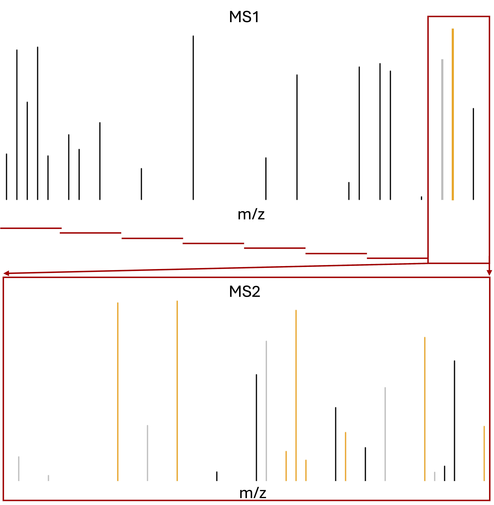
m/z range into sequential windows (e.g., 400–425, 425–450 m/z)
MS2 spectra are complex as many peptides mixed
Deconvolution of the MS2 signal
With dedicated software such as Spectronaut or DIA-NN
- Identification based on spectral libraries
- Library free: FASTA database to predict in silico spectra, retention times, and ion mobilities, which are then used to search the DIA data
- Use of decoys sequences to estimate false discovery rate of ID
Quantification using MS2 and/or MS1 peaks
1.3 Level of quantification
- MS-based proteomics returns peptides or precursors: pieces of proteins

- Quantification commonly required on the protein level
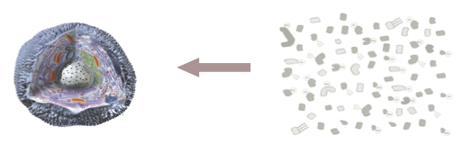
1.4 Challenges
Behind this workflow lies several challenges that will affect the data modelling:
- MS-based proteomics does not measure proteins directly, but their constituting peptide ions. The protein-level information needs to be reconstructed from the ion data. In this tutorial, we will start from the precursor-level data, which has been constructed from the ion data by DIA-NN.
- All peptides do not ionise with the same efficiency. Poor ionisation will lead to reduced signal as less ions will hit the detector, hence leading to a huge variability in intensity among different peptide species, even when they originate from the same protein.
- The identification step is not trivial and prone to errors3. PSM misidentification leads to the assignment of a quantitative values from another peptide with likely another ionisation efficiency and relative abundance. Hence this misassigned values often lead to outliers.
- Moreover, there is a widespread data missingness, which is often related to the underlying quantification value. This phenomenon is known as missingness not at random. Next to that, many reasons can lead to ions not being identified irrespective of their quantification value leading to missingness that is not related to its quantitative value. This is referred to as missingness completely at random. The missingness issue is not negligible as we shall see upon reading the data.
- Identification issues lead to unbalanced peptide missingness across samples, and the patterns of missing values are potentially different for every peptide, highlighting the need for an automatised solution that is robust against missing values.
- Technical variations during the experiment can lead to systematic fluctuations across samples. The most obvious reason is when different sample amounts are injected into the instruments, due to small pipetting inconsistencies for instance. However, these differences lead to unwanted variation that should be discarded when answering biological questions.
1.5 DIA workflow
DIA-NN provides multiple quantifications, e.g. derived from the MS1 or MS2 spectra, and at precursor or protein (protein group) level. The term ‘precursor’ refers to a charged peptide species and is the basic unit of identification and quantification in DIA. Hence, in the context of DIA we refer to a precursor table, instead of to a PSM table in DDA.
Examples of different quantities are:
- raw MS1 area: Ms1.Area, normalised MS1 Area: Ms1.Normalised, MS2 Precursor quantities: Precursor.Quantity, Normalised MS2 Precursor quantities: Precursor.Normalised, etc., which are all at the precursor level
- MS2 based summary at the protein (protein group)-level: PG.MaxLFQ
Here, we will use the Precursor.Quantity column.
1.6 Experimental context
This chapter explains how to analyse a proteomics data set that has been generated using data independent acquisition (DIA). We will again use an in-house spike-in study to illustrate the analysis. The DIA case-study is a subset of Staes et al. (Staes et al. 2024). They spiked digested UPS proteins in yeast at the following ratio’s (yeast:ups ratio 10:1, 10:2, 10:4, 10:8, 10:10) in a yeast digest background.
Each sample was analyzed in triplicate using an Ultimate 3000 RSLC ProFlow nano-LC system in-line connected to a Q Exactive HF BioPharma mass spectrometer (Thermo).
Here, we will only use the data of the samples from the middle 3 spike-in ratio’s (2,4 and 8) that were searched using DIA-NN 2.2.0. The main search output for this DIA-NN version is stored in the report.parquet file in the DIA-NN output directory.

2 Load packages
We load the msqrob2 package, along with additional packages for data manipulation and visualisation.
library("QFeatures")
library("dplyr")
library("tidyr")
library("ggplot2")
library("msqrob2")
library("stringr")
library("ExploreModelMatrix")
library("MsCoreUtils")
library("matrixStats")
library("patchwork")
library("kableExtra")
library("ComplexHeatmap")
library("purrr")
library("tibble")
library("scater")
library("ggcorrplot")2.1 Parallelisation
msqrob2 can parallelise computations during the model estimation to improve speed. However, we will disable parallelisation to ensure this vignette can be run regardless of hardware. Parallelisation is controlled using the BiocParallel package.
library("BiocParallel")
register(SerialParam())If you want to use msqrob2 with parallelisation enabled and using 4 cores, you can run the following:
register(MulticoreParam(workers = 4))Be mindful that, while parallelisation can improve speed, it will also consume more RAM because part of the data will be copied multiple times over your different workers. If you experience crashes because you exceeded the amount of available RAM on your machine, you should reduce the number of requested workers.
3 Data
3.1 Precursor table
We load the output from DIA-NN parquet file.
library("BiocFileCache")
bfc <- BiocFileCache()
precursorFile <- bfcrpath(bfc,"https://github.com/statOmics/msqrob2data/raw/refs/heads/main/dia/spikeinStaes/spikein248-staesetal2024.parquet") We can import the report.parquet file using the read_parquet function from the arrow package. Note, that older versions of DIA-NN store the output as report.tsv.
precursors <- arrow::read_parquet(precursorFile) # function from the arrow package
#precursors <- data.table::fread(precursorFile) # For older versions of DIA-NN, where the results are stored as tsv files. Note that the precursorFile then would point to "report.tsv" Each row in the precursor data table is in “long format” and contains information about one precursor in a specific run (the table below shows the first 6 rows). The columns contains various descriptors about the precursor, such as its sequence, its charge, run, etc. Some of these columns contain the quantification values, e.g. Ms1.Area, Precursor.Quantity etc.
| Run.Index | Run | Channel | Precursor.Id | Modified.Sequence | Stripped.Sequence | Precursor.Charge | Precursor.Lib.Index | Decoy | Proteotypic | Precursor.Mz | Protein.Ids | Protein.Group | Protein.Names | Genes | RT | iRT | Predicted.RT | Predicted.iRT | IM | iIM | Predicted.IM | Predicted.iIM | Precursor.Quantity | Precursor.Normalised | Ms1.Area | Ms1.Normalised | Ms1.Apex.Area | Ms1.Apex.Mz.Delta | Normalisation.Factor | Quantity.Quality | Empirical.Quality | Normalisation.Noise | Ms1.Profile.Corr | Evidence | Mass.Evidence | Channel.Evidence | Ms1.Total.Signal.Before | Ms1.Total.Signal.After | RT.Start | RT.Stop | FWHM | PG.TopN | PG.MaxLFQ | Genes.TopN | Genes.MaxLFQ | Genes.MaxLFQ.Unique | PG.MaxLFQ.Quality | Genes.MaxLFQ.Quality | Genes.MaxLFQ.Unique.Quality | Q.Value | PEP | Global.Q.Value | Lib.Q.Value | Peptidoform.Q.Value | Global.Peptidoform.Q.Value | Lib.Peptidoform.Q.Value | PTM.Site.Confidence | Site.Occupancy.Probabilities | Protein.Sites | Lib.PTM.Site.Confidence | Translated.Q.Value | Channel.Q.Value | PG.Q.Value | PG.PEP | GG.Q.Value | Protein.Q.Value | Global.PG.Q.Value | Lib.PG.Q.Value | Best.Fr.Mz | Best.Fr.Mz.Delta |
|---|---|---|---|---|---|---|---|---|---|---|---|---|---|---|---|---|---|---|---|---|---|---|---|---|---|---|---|---|---|---|---|---|---|---|---|---|---|---|---|---|---|---|---|---|---|---|---|---|---|---|---|---|---|---|---|---|---|---|---|---|---|---|---|---|---|---|---|---|---|---|
| 0 | B000254_Ap_6883_EXT-765_DIA_Yeast_UPS2_ratio02_DIA | (UniMod:1)AAVTLHLR2 | (UniMod:1)AAVTLHLR | AAVTLHLR | 2 | 0 | 0 | 1 | 461.7771 | P38998 | P38998 | LYS1_YEAST | LYS1 | 89.48647 | 34.21962 | 89.64584 | 34.32372 | 0 | 0 | 0 | 0 | 1027105.2 | 1018664.5 | 1664103 | 1650427 | 1235652.9 | -0.0019836 | 0.9917820 | 0.8068524 | 0.9587077 | -0.0107658 | 0.8455485 | 2.328422 | 0.6659890 | 0.9694718 | 1446081536 | 1354918656 | 89.27837 | 89.83672 | 0.1471047 | 0 | 60736892 | 0 | 60736892 | 60736892 | 0.9713600 | 0.9713600 | 0.9713600 | 0.0037350 | 0.0346908 | 6e-07 | 1.8e-06 | 0.0058624 | 0.0006297 | 0.0004264 | 1 | (UniMod:1){1.000000}AAVTLHLR2 | [P38998:nA2] | 1 | 0 | 0 | 0.0003065 | 0.0006127 | 0.0003067 | 0.0003116 | 0.0002956 | 0.0002814 | 639.3937 | -0.0043335 | |
| 1 | B000258_Ap_6883_EXT-765_DIA_Yeast_UPS2_ratio04_DIA | (UniMod:1)AAVTLHLR2 | (UniMod:1)AAVTLHLR | AAVTLHLR | 2 | 0 | 0 | 1 | 461.7771 | P38998 | P38998 | LYS1_YEAST | LYS1 | 88.51812 | 34.21962 | 88.65327 | 34.23263 | 0 | 0 | 0 | 0 | 1686047.0 | 1473639.0 | 2225964 | 1945538 | 2138060.2 | -0.0012512 | 0.8740202 | 0.8539391 | 0.7675559 | 0.0606278 | 0.9467068 | 2.621551 | 0.9197075 | 0.7442634 | 1707504896 | 1714693888 | 88.38112 | 88.65714 | 0.1049480 | 0 | 59386180 | 0 | 59386180 | 59386180 | 0.9682981 | 0.9682981 | 0.9682981 | 0.0000006 | 0.0000010 | 6e-07 | 1.8e-06 | 0.0007060 | 0.0006297 | 0.0004264 | 1 | (UniMod:1){1.000000}AAVTLHLR2 | [P38998:nA2] | 1 | 0 | 0 | 0.0003028 | 0.0006007 | 0.0003029 | 0.0003108 | 0.0002956 | 0.0002814 | 538.3460 | -0.0010986 | |
| 2 | B000262_Ap_6883_EXT-765_DIA_Yeast_UPS2_ratio08_DIA | (UniMod:1)AAVTLHLR2 | (UniMod:1)AAVTLHLR | AAVTLHLR | 2 | 0 | 0 | 1 | 461.7771 | P38998 | P38998 | LYS1_YEAST | LYS1 | 88.19032 | 34.21962 | 88.42429 | 33.99163 | 0 | 0 | 0 | 0 | 1484137.0 | 1497021.4 | 2156443 | 2175164 | 1850866.0 | -0.0018616 | 1.0086815 | 0.8370125 | 0.9024460 | 0.0352767 | 0.9391663 | 1.963248 | 0.6607722 | 0.5847857 | 1906061952 | 2011915136 | 87.98146 | 88.39668 | 0.1602550 | 0 | 61945576 | 0 | 61945576 | 61945576 | 0.9670781 | 0.9670781 | 0.9670781 | 0.0022817 | 0.0274225 | 6e-07 | 1.8e-06 | 0.0059578 | 0.0006297 | 0.0004264 | 1 | (UniMod:1){1.000000}AAVTLHLR2 | [P38998:nA2] | 1 | 0 | 0 | 0.0003133 | 0.0006259 | 0.0003135 | 0.0003190 | 0.0002956 | 0.0002814 | 639.3937 | 0.0012817 | |
| 3 | B000278_Ap_6883_EXT-765_DIA_Yeast_UPS2_ratio02_DIA_2 | (UniMod:1)AAVTLHLR2 | (UniMod:1)AAVTLHLR | AAVTLHLR | 2 | 0 | 0 | 1 | 461.7771 | P38998 | P38998 | LYS1_YEAST | LYS1 | 88.94958 | 34.21962 | 89.25366 | 33.75805 | 0 | 0 | 0 | 0 | 1202390.5 | 1186230.2 | 1752379 | 1728827 | 1130526.8 | -0.0038757 | 0.9865599 | 0.7660662 | 0.7737662 | 0.0300994 | 0.5843989 | 2.661267 | 0.6917942 | 0.8114025 | 2323055360 | 2137220352 | 88.61057 | 89.15668 | 0.2167290 | 0 | 61787356 | 0 | 61787356 | 61787356 | 0.9639115 | 0.9639115 | 0.9639115 | 0.0026284 | 0.0164647 | 6e-07 | 1.8e-06 | 0.0061239 | 0.0006297 | 0.0004264 | 1 | (UniMod:1){1.000000}AAVTLHLR2 | [P38998:nA2] | 1 | 0 | 0 | 0.0003246 | 0.0006370 | 0.0003248 | 0.0003308 | 0.0002956 | 0.0002814 | 425.2619 | 0.0019226 | |
| 5 | B000286_Ap_6883_EXT-765_DIA_Yeast_UPS2_ratio08_DIA_2 | (UniMod:1)AAVTLHLR2 | (UniMod:1)AAVTLHLR | AAVTLHLR | 2 | 0 | 0 | 1 | 461.7771 | P38998 | P38998 | LYS1_YEAST | LYS1 | 88.49445 | 34.21962 | 88.61003 | 34.13313 | 0 | 0 | 0 | 0 | 475073.6 | 579242.2 | 1481789 | 1806699 | 777120.9 | -0.0014648 | 1.2192687 | 0.6968042 | 0.7491062 | 0.1018161 | 0.0000000 | 1.700542 | 0.3975840 | 0.1695192 | 1270731776 | 1315600640 | 88.28562 | 88.63584 | 0.1518549 | 0 | 63859400 | 0 | 63859400 | 63859400 | 0.9677207 | 0.9677207 | 0.9677207 | 0.0040565 | 0.0318976 | 6e-07 | 1.8e-06 | 0.0077074 | 0.0006297 | 0.0004264 | 1 | (UniMod:1){1.000000}AAVTLHLR2 | [P38998:nA2] | 1 | 0 | 0 | 0.0003152 | 0.0006296 | 0.0003154 | 0.0003210 | 0.0002956 | 0.0002814 | 639.3937 | 0.0092773 | |
| 6 | B000302_Ap_6883_EXT-765_DIA_Yeast_UPS2_ratio02_DIA_3 | (UniMod:1)AAVTLHLR2 | (UniMod:1)AAVTLHLR | AAVTLHLR | 2 | 0 | 0 | 1 | 461.7771 | P38998 | P38998 | LYS1_YEAST | LYS1 | 88.94778 | 34.21962 | 89.22704 | 33.83727 | 0 | 0 | 0 | 0 | 1211047.2 | 1278841.4 | 1902638 | 2009148 | 1505334.4 | -0.0023804 | 1.0559797 | 0.8122462 | 0.9176636 | -0.0058500 | 0.8568795 | 2.149787 | 0.2013753 | 0.9174258 | 1576011776 | 1611237888 | 88.80907 | 89.22405 | 0.1854964 | 0 | 57830312 | 0 | 57830312 | 57830312 | 0.9690518 | 0.9690518 | 0.9690518 | 0.0038881 | 0.0323859 | 6e-07 | 1.8e-06 | 0.0095169 | 0.0006297 | 0.0004264 | 1 | (UniMod:1){1.000000}AAVTLHLR2 | [P38998:nA2] | 1 | 0 | 0 | 0.0003108 | 0.0006149 | 0.0003110 | 0.0003160 | 0.0002956 | 0.0002814 | 639.3937 | -0.0004883 |
We filter the data to reduce the memory footprint.
precursors <- precursors |>
select(
Run,
Precursor.Id,
Modified.Sequence,
Stripped.Sequence,
Precursor.Charge,
Protein.Group,
Protein.Names,
Protein.Ids,
Genes,
Precursor.Quantity,
Precursor.Normalised,
Normalisation.Factor,
Ms1.Area,
Ms1.Normalised,
PG.MaxLFQ,
Q.Value,
Lib.Q.Value,
PG.Q.Value,
Lib.PG.Q.Value,
Proteotypic,
Decoy, # Not available in older versions of DIA-NN
RT)We known the ground truth: UPS proteins are differentially abundant (DA, spiked in), Yeast proteins are not.
precursors <- precursors |>
mutate(species = grepl(pattern = "UPS",Protein.Group) |>
as.factor() |>
recode("TRUE"="ups","FALSE" = "yeast"))
precursors |>
pull(species) |>
table()
yeast ups
301195 4481 3.2 Sample annotation table
The sample annotation table) is not available and can be generated from the run labels, as the researchers included information on the design in the filenames.
We will make a new data frame with the annotation.
- Extract unique Run labels
- Split Run label into variables using the “_” separator
- Rename the variable Run to runCol (needed for
readQFeaturesfunction) - Add sampleId
- Sort annotation file according to sampleId
(annot <- precursors |>
dplyr::distinct(Run) |>
mutate(runCol=Run) |>
separate(Run,
into = c(paste("label",1:8), "condition","label9","rep")) |>
mutate(
condition = substr(condition,7,7),
ratio = as.double(condition),
rep = ifelse(is.na(rep),1,rep),
sampleId = paste(condition,rep, sep = "_")) |>
select(runCol, sampleId, condition,ratio,rep)
)# A tibble: 9 × 5
runCol sampleId condition ratio rep
<chr> <chr> <chr> <dbl> <chr>
1 B000254_Ap_6883_EXT-765_DIA_Yeast_UPS2_ratio02… 2_1 2 2 1
2 B000258_Ap_6883_EXT-765_DIA_Yeast_UPS2_ratio04… 4_1 4 4 1
3 B000262_Ap_6883_EXT-765_DIA_Yeast_UPS2_ratio08… 8_1 8 8 1
4 B000278_Ap_6883_EXT-765_DIA_Yeast_UPS2_ratio02… 2_2 2 2 2
5 B000286_Ap_6883_EXT-765_DIA_Yeast_UPS2_ratio08… 8_2 8 8 2
6 B000302_Ap_6883_EXT-765_DIA_Yeast_UPS2_ratio02… 2_3 2 2 3
7 B000306_Ap_6883_EXT-765_DIA_Yeast_UPS2_ratio04… 4_3 4 4 3
8 B000310_Ap_6883_EXT-765_DIA_Yeast_UPS2_ratio08… 8_3 8 8 3
9 B000282_Ap_6883_EXT-765_DIA_Yeast_UPS2_ratio04… 4_2 4 4 2 3.3 Convert to QFeatures
msqrob2 is built around the QFeatures class. We refer to the R for mass spectrometry book for a comprehensive description of the class. In a nutshell, the QFeatures package provides infrastructure to manage and analyse quantitative features from mass spectrometry experiments. It is based on the SummarizedExperiment and MultiAssayExperiment classes. It leverages the hierarchical structure of proteomics experiments: data proteins are composed of peptides, themselves produced by spectra. Each piece of information in stored in an individual SummarizedExperiment object, later referred to as a “set”. Throughout the aggregation and processing of these data, the relations between sets are tracked and recorded, thus allowing users to easily navigate across Precursor(DIA)/PSM(DDA), peptide and protein quantitative data.

QFeatures data class.The readQFeatures() enables a seamless conversion of tabular data into a QFeatures object. We provide the peptide table and the sample annotation table. The function will use the quantCols column in the sample annotation table to understand which columns in peptides contain the quantitative values, and automatically link the corresponding sample annotation with the quantitative values. We also tell the function to use the Sequence column as peptide identifier, which will be used as rownames. See ?readQFeatures() for more details.
First, recall that the precursor table is file in long format. Every quantitative column in the precursor table contains information for multiple runs. Therefore, the function split the table based on the run identifier, given by the runCol argument (for DIA-NN, that identifier is contained in run). So, the QFeatures object after import will contain as many sets as there are runs. Next, the function links the annotation table with the PSM data. To achieve this, the annotation table must contain a runCol column that provides the run identifier in which each sample has been acquired, and this information will be used to match the identifiers in the Run column of the precursor table.
Here, we will use the Precursor.Quantity column as quantification input.
Note, that we filter a number of variables to reduce the footprint of the QFeatures object.
(qf <- readQFeatures(assayData = precursors,
colData = annot,
quantCols = "Precursor.Quantity",
runCol = "Run",
fnames = "Precursor.Id"))An instance of class QFeatures (type: bulk) with 9 sets:
[1] B000254_Ap_6883_EXT-765_DIA_Yeast_UPS2_ratio02_DIA: SummarizedExperiment with 34471 rows and 1 columns
[2] B000258_Ap_6883_EXT-765_DIA_Yeast_UPS2_ratio04_DIA: SummarizedExperiment with 35142 rows and 1 columns
[3] B000262_Ap_6883_EXT-765_DIA_Yeast_UPS2_ratio08_DIA: SummarizedExperiment with 34028 rows and 1 columns
...
[7] B000302_Ap_6883_EXT-765_DIA_Yeast_UPS2_ratio02_DIA_3: SummarizedExperiment with 33091 rows and 1 columns
[8] B000306_Ap_6883_EXT-765_DIA_Yeast_UPS2_ratio04_DIA_3: SummarizedExperiment with 34472 rows and 1 columns
[9] B000310_Ap_6883_EXT-765_DIA_Yeast_UPS2_ratio08_DIA_3: SummarizedExperiment with 33724 rows and 1 columns We now have a QFeatures object with 9 sets, one set for each run that are named based on their run name in the runCol. The sample annotations can be retrieved using colData().
colData(qf)knitr::kable(head(colData(qf)))| runCol | sampleId | condition | ratio | rep | |
|---|---|---|---|---|---|
| B000254_Ap_6883_EXT-765_DIA_Yeast_UPS2_ratio02_DIA | B000254_Ap_6883_EXT-765_DIA_Yeast_UPS2_ratio02_DIA | 2_1 | 2 | 2 | 1 |
| B000258_Ap_6883_EXT-765_DIA_Yeast_UPS2_ratio04_DIA | B000258_Ap_6883_EXT-765_DIA_Yeast_UPS2_ratio04_DIA | 4_1 | 4 | 4 | 1 |
| B000262_Ap_6883_EXT-765_DIA_Yeast_UPS2_ratio08_DIA | B000262_Ap_6883_EXT-765_DIA_Yeast_UPS2_ratio08_DIA | 8_1 | 8 | 8 | 1 |
| B000278_Ap_6883_EXT-765_DIA_Yeast_UPS2_ratio02_DIA_2 | B000278_Ap_6883_EXT-765_DIA_Yeast_UPS2_ratio02_DIA_2 | 2_2 | 2 | 2 | 2 |
| B000282_Ap_6883_EXT-765_DIA_Yeast_UPS2_ratio04_DIA_2 | B000282_Ap_6883_EXT-765_DIA_Yeast_UPS2_ratio04_DIA_2 | 4_2 | 4 | 4 | 2 |
| B000286_Ap_6883_EXT-765_DIA_Yeast_UPS2_ratio08_DIA_2 | B000286_Ap_6883_EXT-765_DIA_Yeast_UPS2_ratio08_DIA_2 | 8_2 | 8 | 8 | 2 |
We can get a sample annotation directly using the $ accessor.
qf$condition[1] "2" "4" "8" "2" "4" "8" "2" "4" "8"We can extract the SummarizedExperiment object for the B000254_Ap_6883_EXT-765_DIA_Yeast_UPS2_ratio02_DIA set using double bracket subsetting4
qf[["B000254_Ap_6883_EXT-765_DIA_Yeast_UPS2_ratio02_DIA"]]class: SummarizedExperiment
dim: 34471 1
metadata(0):
assays(1): ''
rownames(34471): (UniMod:1)AAVTLHLR2 (UniMod:1)ADFLLRPIK2 ...
YYYELAYPMGISASHK3 YYYITPISSK2
rowData names(22): Run Precursor.Id ... RT species
colnames(1): B000254_Ap_6883_EXT-765_DIA_Yeast_UPS2_ratio02_DIA
colData names(0):But notice that the sample annotations were not extracted along with the SummarizedExperiment (colData names(0):). This can be performed using getWithColData(), which extracts the set of interest (like [[]]) along with all the associated sample annotations.
getWithColData(qf, "B000254_Ap_6883_EXT-765_DIA_Yeast_UPS2_ratio02_DIA")class: SummarizedExperiment
dim: 34471 1
metadata(0):
assays(1): ''
rownames(34471): (UniMod:1)AAVTLHLR2 (UniMod:1)ADFLLRPIK2 ...
YYYELAYPMGISASHK3 YYYITPISSK2
rowData names(22): Run Precursor.Id ... RT species
colnames(1): B000254_Ap_6883_EXT-765_DIA_Yeast_UPS2_ratio02_DIA
colData names(5): runCol sampleId condition ratio repThe precursor annotations are available for in the corresponding rowData.
rowData(qf[["B000254_Ap_6883_EXT-765_DIA_Yeast_UPS2_ratio02_DIA"]])knitr::kable(head(rowData(qf[["B000254_Ap_6883_EXT-765_DIA_Yeast_UPS2_ratio02_DIA"]])))| Run | Precursor.Id | Modified.Sequence | Stripped.Sequence | Precursor.Charge | Protein.Group | Protein.Names | Protein.Ids | Genes | Precursor.Normalised | Normalisation.Factor | Ms1.Area | Ms1.Normalised | PG.MaxLFQ | Q.Value | Lib.Q.Value | PG.Q.Value | Lib.PG.Q.Value | Proteotypic | Decoy | RT | species | |
|---|---|---|---|---|---|---|---|---|---|---|---|---|---|---|---|---|---|---|---|---|---|---|
| (UniMod:1)AAVTLHLR2 | B000254_Ap_6883_EXT-765_DIA_Yeast_UPS2_ratio02_DIA | (UniMod:1)AAVTLHLR2 | (UniMod:1)AAVTLHLR | AAVTLHLR | 2 | P38998 | LYS1_YEAST | P38998 | LYS1 | 1018664 | 0.9917820 | 1664103 | 1650427 | 60736892 | 0.0037350 | 0.0000018 | 0.0003065 | 0.0002814 | 1 | 0 | 89.48647 | yeast |
| (UniMod:1)ADFLLRPIK2 | B000254_Ap_6883_EXT-765_DIA_Yeast_UPS2_ratio02_DIA | (UniMod:1)ADFLLRPIK2 | (UniMod:1)ADFLLRPIK | ADFLLRPIK | 2 | P38768 | PIH1_YEAST | P38768 | PIH1 | 5805858 | 1.0022984 | 6862994 | 6878766 | 5839721 | 0.0001971 | 0.0004220 | 0.0003065 | 0.0002814 | 1 | 0 | 121.34409 | yeast |
| (UniMod:1)ADQENSPLHTVGFDAR2 | B000254_Ap_6883_EXT-765_DIA_Yeast_UPS2_ratio02_DIA | (UniMod:1)ADQENSPLHTVGFDAR2 | (UniMod:1)ADQENSPLHTVGFDAR | ADQENSPLHTVGFDAR | 2 | Q01519 | COX12_YEAST | Q01519 | COX12 | 2484560 | 0.9013858 | 4638513 | 4181090 | 4200631 | 0.0001109 | 0.0000110 | 0.0003065 | 0.0002814 | 1 | 0 | 96.37570 | yeast |
| (UniMod:1)ADRPAIQLIDEEK2 | B000254_Ap_6883_EXT-765_DIA_Yeast_UPS2_ratio02_DIA | (UniMod:1)ADRPAIQLIDEEK2 | (UniMod:1)ADRPAIQLIDEEK | ADRPAIQLIDEEK | 2 | Q99287 | SEY1_YEAST | Q99287 | SEY1 | 23580588 | 0.9201562 | 41664160 | 38337532 | 19897200 | 0.0002359 | 0.0005324 | 0.0003065 | 0.0002814 | 1 | 0 | 99.30938 | yeast |
| (UniMod:1)ADSRDPASDQMQHWK3 | B000254_Ap_6883_EXT-765_DIA_Yeast_UPS2_ratio02_DIA | (UniMod:1)ADSRDPASDQMQHWK3 | (UniMod:1)ADSRDPASDQMQHWK | ADSRDPASDQMQHWK | 3 | UPS|P04040ups|CATA_HUMAN_UPS | Catalase | UPS|P04040ups|CATA_HUMAN_UPS | Catalase | 18282968 | 0.8913103 | 38022488 | 33889840 | 446047008 | 0.0000007 | 0.0000005 | 0.0003065 | 0.0002814 | 1 | 0 | 72.52413 | ups |
| (UniMod:1)ADYSSLTVVQLK2 | B000254_Ap_6883_EXT-765_DIA_Yeast_UPS2_ratio02_DIA | (UniMod:1)ADYSSLTVVQLK2 | (UniMod:1)ADYSSLTVVQLK | ADYSSLTVVQLK | 2 | P40040 | THO1_YEAST | P40040 | THO1 | 1040754 | 1.0729221 | 2283084 | 2449571 | 30541228 | 0.0005245 | 0.0000007 | 0.0003065 | 0.0002814 | 1 | 0 | 116.96347 | yeast |
We can also retrieve the quantitative values for each set using assay(). Here we only show the first 5 rows of the intensity matrix for the first summarized experiment.
assay(qf[[1]]) |> head(5) B000254_Ap_6883_EXT-765_DIA_Yeast_UPS2_ratio02_DIA
(UniMod:1)AAVTLHLR2 1027105
(UniMod:1)ADFLLRPIK2 5792544
(UniMod:1)ADQENSPLHTVGFDAR2 2756378
(UniMod:1)ADRPAIQLIDEEK2 25626726
(UniMod:1)ADSRDPASDQMQHWK3 20512458Note, that there is only one column, because each run has been stored in a separate summarized experiment. We will join the data of the runs later.
Since we have a QFeatures object, we can directly make use of QFeatures’ data preprocessing functionality5. A major advantage of QFeatures is it provides the power to build highly modular workflows, where each step is carried out by a dedicated function with a large choice of available methods and parameters. This means that users can adapt the workflow to their specific use case and their specific needs.
4 Data preprocessing
The data preprocessing workflow for DIA data is similar to the workflow for DDA-LFQ data, but there are suble differences as we start from precursor level data and have additional columns.
4.1 Encoding missing values
The first preprocessing step is to correctly encode the missing values. It is important that missing values are encoded using NA. For instance, non-observed values should not be encoded with a zero because true zeros (the proteomic feature is absent from the sample) cannot be distinguished from technical zeros (the feature was missed by the instrument or could not be identified). We therefore replace any zero in the quantitative data with an NA.
qf <- zeroIsNA(qf, names(qf))Note that msqrob2 can handle missing data without having to rely on hard-to-verify imputation assumptions, which is our general recommendation. However, msqrob2 does not prevent users from using imputation, which can be performed with impute() from the QFeatures package.
4.2 Precursor Filtering
Filtering removes low-quality and unreliable precursors that would otherwise introduce noise and artefacts in the data.
4.2.1 Remove questionable identifications
We apply standard filtering advised by DIA-NN:
q-value threshold of 0.01 for the identification of precursors (
Q.Value) and protein groups (PG.Q.Value). If the file is processed via matching between runs, it is also useful to filter on Lib.Q.Value and Lib.PG.Q.Value.Remove precursors that could not be mapped, i.e. when
Precursor.Idcolumn is an empty string.Filter decoys, i.e. only keep precursors for which the
Decoycolumn equals 0. (Note, that theDecoycolumn is not present in the output of older versions of DIA-NN)Keeping only proteotypic peptides, which map uniquely to a specific protein.
qf <- qf |>
filterFeatures(~ Q.Value <= 0.01 & #1.
PG.Q.Value <= 0.01 & #1.
Lib.Q.Value <= 0.01 & #1.
Lib.PG.Q.Value <= 0.01 & #1.
Precursor.Id != "" & #2.
Decoy == 0 & #3. (Note, that this filter is not available with previous versions of DIA-NN, as the report.tsv file did not include a Decoy column. So other strategies are needed if Decoys are in the output file.)
Proteotypic == 1) #4.Note, that it is important that the filtering criteria are not distorting the distribution of the test statistics in the downstream analysis for features that are non-DA. It can be shown that filtering will not induce bias results when the filtering criterion is independent of test statistic. The criteria that we proposed above are all based on the results of the identification step, hence, they are independent of the downstream test statistics that will be used to prioritize DA proteins.
4.2.2 Assay joining
Up to now, the data from different runs were kept in separate assays. We can now join the normalised sets into an precursor set using joinAssays(). Sets are joined by stacking the columns (samples) in a matrix and rows (features) are matched according to a row identifier, here the Precursor.Id. We will store the result in the assay with name: precursor.
(qf <- joinAssays(
x = qf,
i = names(qf),
fcol = "Precursor.Id",
name = "precursors"
))An instance of class QFeatures (type: bulk) with 10 sets:
[1] B000254_Ap_6883_EXT-765_DIA_Yeast_UPS2_ratio02_DIA: SummarizedExperiment with 32848 rows and 1 columns
[2] B000258_Ap_6883_EXT-765_DIA_Yeast_UPS2_ratio04_DIA: SummarizedExperiment with 33491 rows and 1 columns
[3] B000262_Ap_6883_EXT-765_DIA_Yeast_UPS2_ratio08_DIA: SummarizedExperiment with 32406 rows and 1 columns
...
[8] B000306_Ap_6883_EXT-765_DIA_Yeast_UPS2_ratio04_DIA_3: SummarizedExperiment with 32829 rows and 1 columns
[9] B000310_Ap_6883_EXT-765_DIA_Yeast_UPS2_ratio08_DIA_3: SummarizedExperiment with 32128 rows and 1 columns
[10] precursors: SummarizedExperiment with 38615 rows and 9 columns We will again retrieve the quantitative values for each set using assay(). Here we only show the first 5 rows and columns of the intensity matrix and illustrate default subsetting that is possible.
assay(qf [["precursors"]])[1:5, 1:5] B000254_Ap_6883_EXT-765_DIA_Yeast_UPS2_ratio02_DIA
(UniMod:1)ADFLLRPIK2 5792544.5
(UniMod:1)ADRPAIQLIDEEK2 25626726.0
(UniMod:1)ADSRDPASDQMQHWK3 20512458.0
(UniMod:1)ADYSSLTVVQLK2 970017.8
(UniMod:1)AEASIEK1 74863536.0
B000258_Ap_6883_EXT-765_DIA_Yeast_UPS2_ratio04_DIA
(UniMod:1)ADFLLRPIK2 5616620
(UniMod:1)ADRPAIQLIDEEK2 23988660
(UniMod:1)ADSRDPASDQMQHWK3 54094184
(UniMod:1)ADYSSLTVVQLK2 1394431
(UniMod:1)AEASIEK1 92867856
B000262_Ap_6883_EXT-765_DIA_Yeast_UPS2_ratio08_DIA
(UniMod:1)ADFLLRPIK2 4810394
(UniMod:1)ADRPAIQLIDEEK2 23561136
(UniMod:1)ADSRDPASDQMQHWK3 156667664
(UniMod:1)ADYSSLTVVQLK2 888451
(UniMod:1)AEASIEK1 87658384
B000278_Ap_6883_EXT-765_DIA_Yeast_UPS2_ratio02_DIA_2
(UniMod:1)ADFLLRPIK2 5575437
(UniMod:1)ADRPAIQLIDEEK2 18285408
(UniMod:1)ADSRDPASDQMQHWK3 21354380
(UniMod:1)ADYSSLTVVQLK2 1183666
(UniMod:1)AEASIEK1 55235320
B000282_Ap_6883_EXT-765_DIA_Yeast_UPS2_ratio04_DIA_2
(UniMod:1)ADFLLRPIK2 4381680
(UniMod:1)ADRPAIQLIDEEK2 16335785
(UniMod:1)ADSRDPASDQMQHWK3 50734624
(UniMod:1)ADYSSLTVVQLK2 1069145
(UniMod:1)AEASIEK1 630968004.2.3 Filtering: Remove highly missing precursors
qf[,,"precursors"] |>
longForm(colvars = colnames(colData(qf))) |>
ggplot(aes(x = sampleId)) +
geom_bar(aes(fill = factor(!is.na(value))),
colour = "black") +
theme_minimal()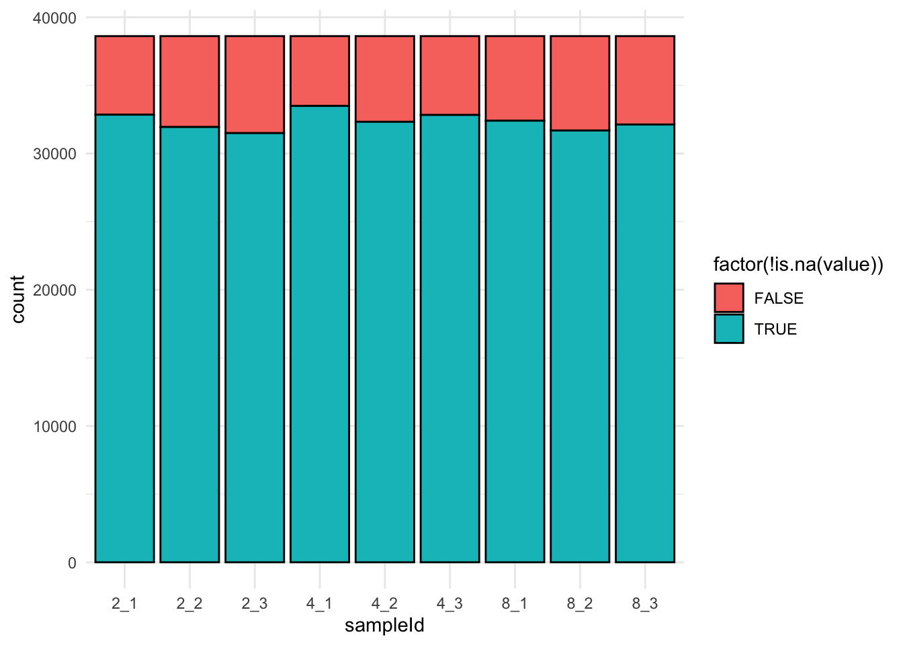
We keep peptides that were observed at last 4 times out of the \(n = 9\) samples, so that we can estimate the peptide characteristics. We tolerate the following proportion of NAs: \(\text{pNA} = \frac{(n - 4)}{n} = 0.556\), so we keep peptides that are observed in at least 44.4% of the samples, which corresponds to one treatment condition. This is an arbitrary value that may need to be adjusted depending on the experiment and the data set.
nObs <- 4
n <- ncol(qf[["precursors"]])
(qf <- filterNA(qf, i = "precursors", pNA = (n - nObs) / n))An instance of class QFeatures (type: bulk) with 10 sets:
[1] B000254_Ap_6883_EXT-765_DIA_Yeast_UPS2_ratio02_DIA: SummarizedExperiment with 32848 rows and 1 columns
[2] B000258_Ap_6883_EXT-765_DIA_Yeast_UPS2_ratio04_DIA: SummarizedExperiment with 33491 rows and 1 columns
[3] B000262_Ap_6883_EXT-765_DIA_Yeast_UPS2_ratio08_DIA: SummarizedExperiment with 32406 rows and 1 columns
...
[8] B000306_Ap_6883_EXT-765_DIA_Yeast_UPS2_ratio04_DIA_3: SummarizedExperiment with 32829 rows and 1 columns
[9] B000310_Ap_6883_EXT-765_DIA_Yeast_UPS2_ratio08_DIA_3: SummarizedExperiment with 32128 rows and 1 columns
[10] precursors: SummarizedExperiment with 34796 rows and 9 columns 4.2.4 Filter one-hit wonders
Here, we remove proteins that can only be found by one peptide, as such proteins may not be trustworthy.
We first calculate how many distinct peptides map to each protein (
Protein.Group). We use the stripped precursor sequence, i.e. sequence of the base peptide for this purpose.We store this information in the row data of the precursors assay
We filter precursors of one-hit wonder proteins.
# Filter for peptides per protein
pepsPerProtDf <- qf[["precursors"]] |>
rowData() |>
data.frame() |>
dplyr::select("Stripped.Sequence", "Protein.Group") |>
group_by(Protein.Group) |>
mutate(pepsPerProt = Stripped.Sequence |>
unique() |> length()
) #1.
rowData(qf[["precursors"]])$pepsPerProt <- pepsPerProtDf$pepsPerProt #2.
qf <- filterFeatures(qf,
~ pepsPerProt > 1,
keep = TRUE) #3.4.3 Log-transformation
We typically start a MS-based proteomics data analysis by log2 transforming the intensities. We illustrate the rationale using the spike-in data. For this, we perform a short data manipulation pipeline:
- We use
longForm()to convert theQFeaturesobject into a long table, where each row contains the quantitative information about one observation, in which column, row and set it was found. Long tables are particularly useful for manipulating data with thetidyverseecosystem, namely withggplot2for visualisation.longForm()also allows to include annotations, and we here includeMixtureandTechRepMixturefor filtering and colouring. longForm()returns aDataFramewhich we convert to adata.frame.- We filter the data to keep only the data from precursor “(UniMod:1)ADSRDPASDQMQHWK3”.
dat <- longForm(qf, colvars = colnames(colData(qf))) |> ## 1.
data.frame() |> ## 2.
filter(rowname == "(UniMod:1)ADSRDPASDQMQHWK3") ## 3.Next, we visualise the data using ggplot2. We will show the intensities and log2-intensities for one of the precursors, ADSRDPASDQMQHWK3, in function of the known spike-in ratio. We first define a common plot from which we generate two plots, one without and the other with log2 transformation of the quantitative values.
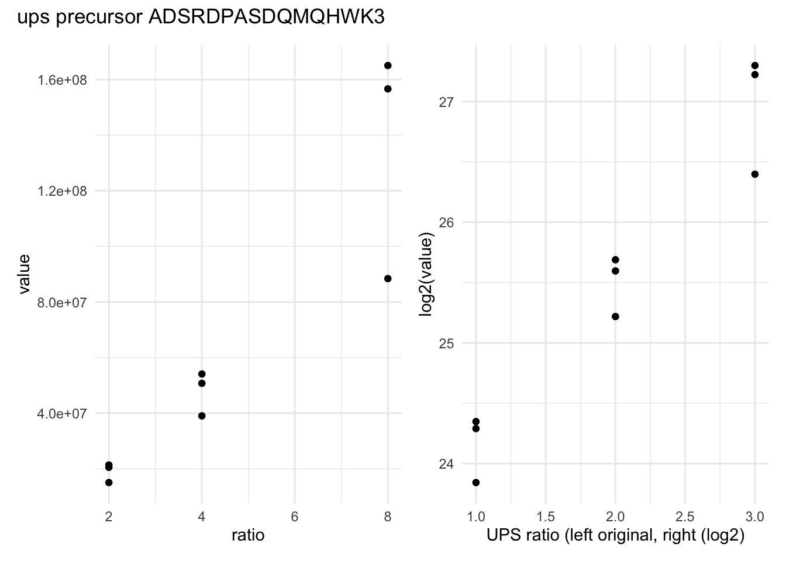
We can see that the variation around the mean for each concentration slightly increases as the mean increases. This is known as heteroskedasticity. We will later see that msqrob2 assumes that variance of the error is equal across the different conditions. Upon, log2-transformation we can see that the problem of unequal variability is solved.
Another advantages of log2-transformation is that it provides a scale that directly relates to biological interpretation. In biology, a change induced by some condition often results in a fold change in concentration. Interestingly, the log2 fold change (logFC), which is the log2 of the ratio between two conditions, is identical to the difference between the log of each condition.
\[log_2FC_{b-a} = log_2b - log_2a = log_2 \frac{b}{a}\]
This simplifies the modelling since the effects are now additive and it provides a straightforward interpretation, i.e. a logFC of 1 means that the abundances are on average \(2\times\) higher in \(b\) than in \(a\), a logFC of 2 means an average increase of \(4\times\), for instance. Also, note that the averages calculated at the log2-scale have the interpretation of log2-transformed geometric means.
We perform log2-transformation with logTransform() from the QFeatures package. We use base = 2 and store the result in a new summarized experiment named precursors_log
qf <- logTransform(qf,
base = 2,
i = "precursors",
name = "precursors_log")4.4 Normalisation
The most common objective of MS-based proteomics experiments is to understand the biological changes in protein abundance between experimental conditions. However, changes in measurements between groups can be caused due to technical factors. For instance, there are systematic fluctuations from run-to-run that shift the measured intensity distribution. We can this explore as follows:
- We extract the sets containing the log transformed data. This is performed using
QFeatures’ 3-way subsetting6. - We use
longForm()to convert theQFeaturesobject into a long table, includingconditionandconcentrationfor filtering and colouring. - We visualise the density of the quantitative values within each sample. We colour each sample based on its spike-in condition.
qf[, , "precursors_log"] |> #1.
longForm(colvars = colnames(colData(qf))) |> #2.
data.frame() |>
filter(!is.na(value)) |>
ggplot() + #3.
aes(x = value,
colour = condition,
group = colname) +
geom_density() +
theme_minimal()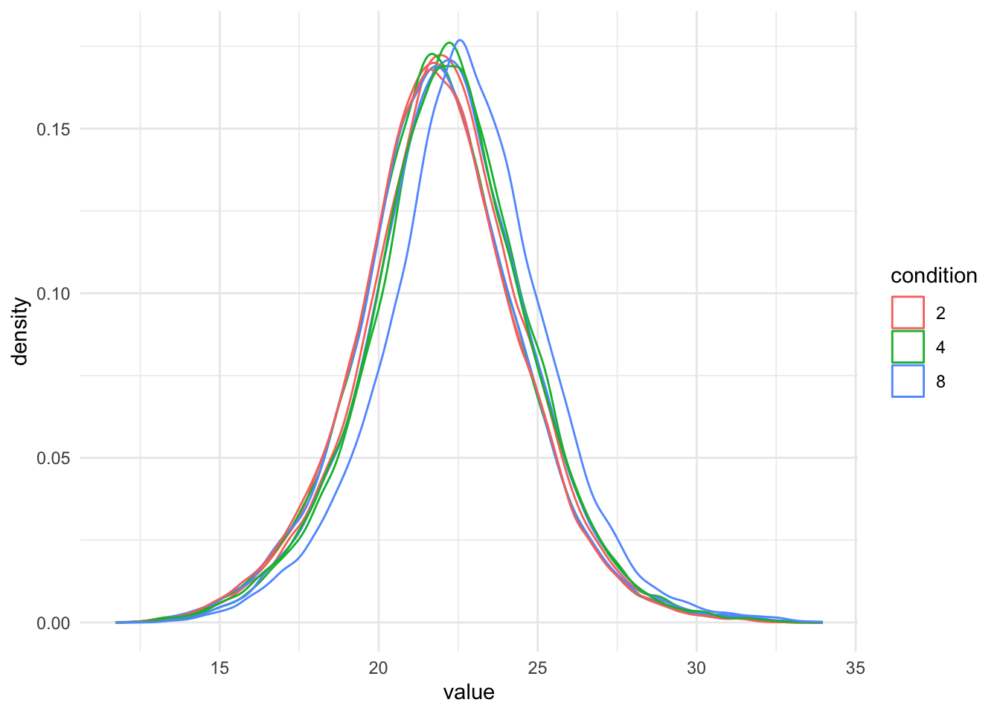
Even in this clean synthetic data set (same yeast background with some spiked UPS proteins), the marginal precursor intensity distributions across samples are not well aligned. Ignoring this effect will increase the noise and reduce the statistical power of the experiment, and may also, in case of unbalanced designs, introduce confounding effects that will bias the results.
There are many ways to perform the normalisation, e.g. median centering is a popular choice. If we subtract the sample median at the log scale from each precursor log2 intensity, this basically boils down to calculating log-ratio’s between the precursor intensity and its sample median.
Here, we will use the Median of Ratios method of DESeq2, which was originally developed for RNA-seq data analysis and can also correct for differences in composition of the proteomes in the different samples. The method first calculates pseudo-reference sample (row-wise mean of log2 intensities, which corresponds to the log2 transformed geometric mean). THen calculates log2 ratios of each sample w.r.t. the pseudo-reference. Finally the column wise median of these log2 ratios is taken to obtain the sample based normalisation factor on the log2 scale. This procedure is implemented in the msqrob2 function nfLogMedianOfRatios.
- We calculate the log transformed normalisation factor from the Median of Ratios method
- Subtract these log2-norm factors from the intensities of each corresponding column of the assay data and store the result in the new assay peptides_norm. (We adopt the sweep function to the
peptides_logassay of the spikein QFeatures object with as statistic the log2 normfactorSTATS = nfLogthe default functionFUN = "-",MARGIN = 2to substract the column wise log2 norm factor from each entry of the corresponding assay data).
nfLog <- nfLogMedianOfRatios(qf, "precursors_log") #1.
qf<- sweep( #Subtract log2 norm factor column-by-column (MARGIN = 2) #2.
qf,
MARGIN = 2,
STATS = nfLog,
i = "precursors_log",
name = "precursors_norm"
)We explore the effect of the total normalisation in the subsequent plot.
Formally, the function applies the following operation on each sample \(i\) across all precursors \(p\):
\[ y_{ip}^{\text{norm}} = y_{ip} - \log_2(nf_i) \]
with \(y_ip\) the log2-transformed intensities and \(nf_i\) the log2-transformed norm factor. Upon normalisation, we can see that the distribution of the \(y_{ip}^{\text{norm}}\) nicely overlap (using the same code as above)
qf[, , "precursors_norm"] |>
longForm(colvars = colnames(colData(qf))) |>
data.frame() |>
filter(!is.na(value)) |>
ggplot() +
aes(x = value,
colour = condition,
group = colname) +
geom_density() +
labs(subtitle = "Normalised log2 precursor intensities") +
theme_minimal()
Note, that many different normalisation factors are proposed in the literature. We will evaluate different normalisation strategies in the tutorial session.
Users who prefer to use the internal normalisation method can start their data analysis from the pre-normalised data, i.e. use the Precursor.Normalised in DIA-NN in the readQFeatures function or the msqrob2gui APPs. They can then simply skip the normalisation step, while keep all other data processing steps as before.
4.5 Summarisation
The objective of summarisation (also referred to as aggregation) is to summarise the precursor-level intensities into a protein expression value. We illustrate the motivation for summarisation using all peptide-level data for one of the spiked UPS proteins. The different precursors are shown on the x axis and plot their log2 normalised intensities across samples on y axis. All the points belonging to the same sample are linked through a grey line.
protName <- "UPS|P01008ups|ANT3_HUMAN_UPS"
qf[,,"precursors_norm"] |>
longForm(colvars = colnames(colData(qf)), rowvars = "Protein.Ids") |>
data.frame() |>
filter(Protein.Ids == protName) |>
ggplot() +
aes(x = rowname,
y = value,
group = colname) +
geom_line(linewidth = 0.1) +
geom_point(aes(fill = condition), size = 3, shape = 21) +
theme(axis.text.x = element_text(angle = 90, hjust = 1, vjus = 0.5),
legend.position = "top") +
labs(
subtitle = protName,
x = "Precursor",
y = "log2(norm Intensity)") +
theme_minimal()+
theme(axis.text.x = element_text(angle = 90, vjust = 0.5, hjust = 1))
- We can see that data for a protein can consist of many precursors, hence the need for summarisation.
- We observe that different precursors have different intensities within the same sample (same line). This is because different precursors have different properties and hence differ in their ionisation efficiency, which will influence the detectability in the MS (Challenges).
- The precursor identification are inconsistent between groups of interest. We can see the low-concentration group (condition a, red) display more missing values than the high-concentration group (condition e, blue). Moreover, which value is missing depends on the precursor characteristics. All the precursors found in the low-concentration group are the most intense precursors in the high concentration group.
- We also often find outliers, for instance, due to misidentification or fluctuations during MS acquisition.
- These data also suggest pseudo-replication. The precursor intensities in one same sample (dots connected by a line) are correlated, i.e. they more alike than the precursor intensities between samples (the lines do not perfectly align).
The fact that different precursors have different intensities (2.), may be inconsistently identified (3.) and/or quantified (4.), and show sample correlations (5.) can lead to bias if we use simple summarisation approaches such as summing or averaging the precursor intensities for each sample. Instead, we will resort to more advanced summarisation approaches to accommodate for these issues.
Here, we summarise the precursor-level data into protein intensities using maxLFQ. maxLFQ first calculates all pairwise log ratio’s between samples only using their shared precursors. Particularly, it uses the median of the log ratio’s between the shared precursors s, i.e. \[r_{ij} = median(y_{sj}-y_{si})\].
Hence, it first eliminates peptide effects. It then estimates the summaries by solving
\[
\sum_i\sum_j(y^{prot}_j - y^{prot}_i - r_{ij})^2
\] It is implemented in the maxLFQ function of the iq package.
aggregateFeatures() streamlines summarisation. It requires the name of a rowData column to group the precursors into proteins (or protein groups), here Protein.Group. We provide the summarisation approach through the fun argument. Other summarisation methods are available from the MsCoreUtils package, see ?aggregateFeatures for a comprehensive list. The function will return a QFeatures object with a new set that we called proteins.
(qf <- aggregateFeatures(
qf, i = "precursors_norm",
name = "proteins",
fcol = "Protein.Group",
# fun = MsCoreUtils::medianPolish,
fun = function(X, ...) iq::maxLFQ(X)$estimate,
na.rm = TRUE
))An instance of class QFeatures (type: bulk) with 13 sets:
[1] B000254_Ap_6883_EXT-765_DIA_Yeast_UPS2_ratio02_DIA: SummarizedExperiment with 32848 rows and 1 columns
[2] B000258_Ap_6883_EXT-765_DIA_Yeast_UPS2_ratio04_DIA: SummarizedExperiment with 33491 rows and 1 columns
[3] B000262_Ap_6883_EXT-765_DIA_Yeast_UPS2_ratio08_DIA: SummarizedExperiment with 32406 rows and 1 columns
...
[11] precursors_log: SummarizedExperiment with 34421 rows and 9 columns
[12] precursors_norm: SummarizedExperiment with 34421 rows and 9 columns
[13] proteins: SummarizedExperiment with 3121 rows and 9 columns Note that all the links between precursors and proteins are kept7. This come particularly handy when we want to extract all the data from one protein, P16083 for instance. This can be performed using the 3-way indexing. Every QFeatures object contains one or more sets, each characterised by multiple rows (precursors or proteins) and multiple columns (samples). Therefore, QFeatures can subset data based on one or more of these indices, data[set_k, feature_i, sample_j]. The first entry will subset particular features. This can be the name of a precursor (e.g. KGMVAAWSQR2) or the name of a protein (UPS|P01008ups|ANT3_HUMAN_UPS). The second entry selects the samples columns of interest. The third entry selects the sets of interest. If an entry is left blank, all the corresponding features, samples or sets will be selected. Let’s extract all the data (all samples and all sets) related to the ups protein (UPS|P01008ups|ANT3_HUMAN_UPS).
qf["UPS|P01008ups|ANT3_HUMAN_UPS", , ]An instance of class QFeatures (type: bulk) with 13 sets:
[1] B000254_Ap_6883_EXT-765_DIA_Yeast_UPS2_ratio02_DIA: SummarizedExperiment with 5 rows and 1 columns
[2] B000258_Ap_6883_EXT-765_DIA_Yeast_UPS2_ratio04_DIA: SummarizedExperiment with 9 rows and 1 columns
[3] B000262_Ap_6883_EXT-765_DIA_Yeast_UPS2_ratio08_DIA: SummarizedExperiment with 10 rows and 1 columns
...
[11] precursors_log: SummarizedExperiment with 12 rows and 9 columns
[12] precursors_norm: SummarizedExperiment with 12 rows and 9 columns
[13] proteins: SummarizedExperiment with 1 rows and 9 columns We finally evaluate the marginal distribution of the aggregated protein summaries.
qf[, , "proteins"] |>
longForm(colvars = colnames(colData(qf))) |>
data.frame() |>
filter(!is.na(value)) |>
ggplot() +
aes(x = value,
colour = condition,
group = colname) +
geom_density() +
theme_minimal() +
labs(subtitle = "Normalised log2 protein intensities")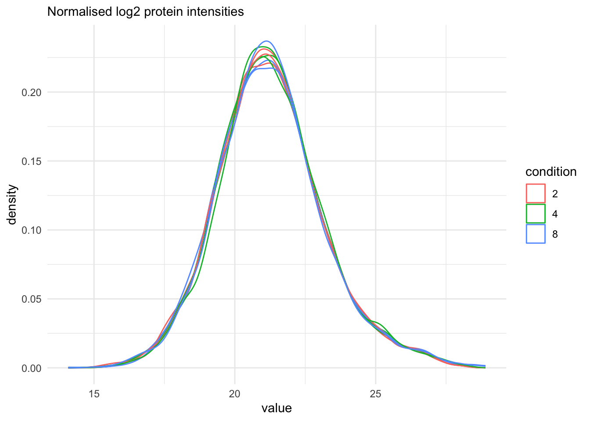
The data processing is complete.
plot(qf)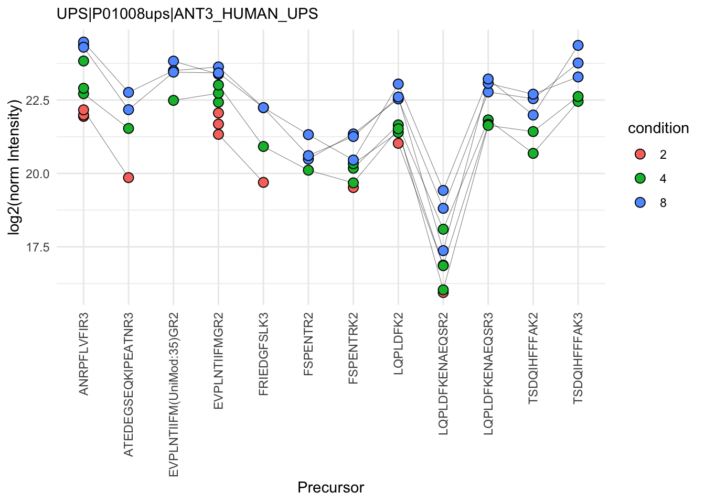
5 Data exploration and QC
Data exploration aims to highlight the main sources of variation in the data prior to data modelling and can pinpoint to outlying or off-behaving samples.
5.1 Marginal distribution at precursor and protein level
qf[, , "precursors_norm"] |>
longForm(colvars = colnames(colData(qf))) |>
data.frame() |>
filter(!is.na(value)) |>
ggplot() +
aes(x = value,
colour = condition,
group = colname) +
geom_density() +
theme_minimal() +
labs(subtitle = "Normalised log2 precursor intensities")
qf[, , "precursors_norm"] |>
longForm(colvars = colnames(colData(qf))) |>
data.frame() |>
filter(!is.na(value)) |>
ggplot() +
aes(x = sampleId,
y = value,
colour = condition,
group = colname) +
xlab("sample") +
geom_boxplot() +
theme_minimal() +
labs(subtitle = "Normalised log2 precursor intensities")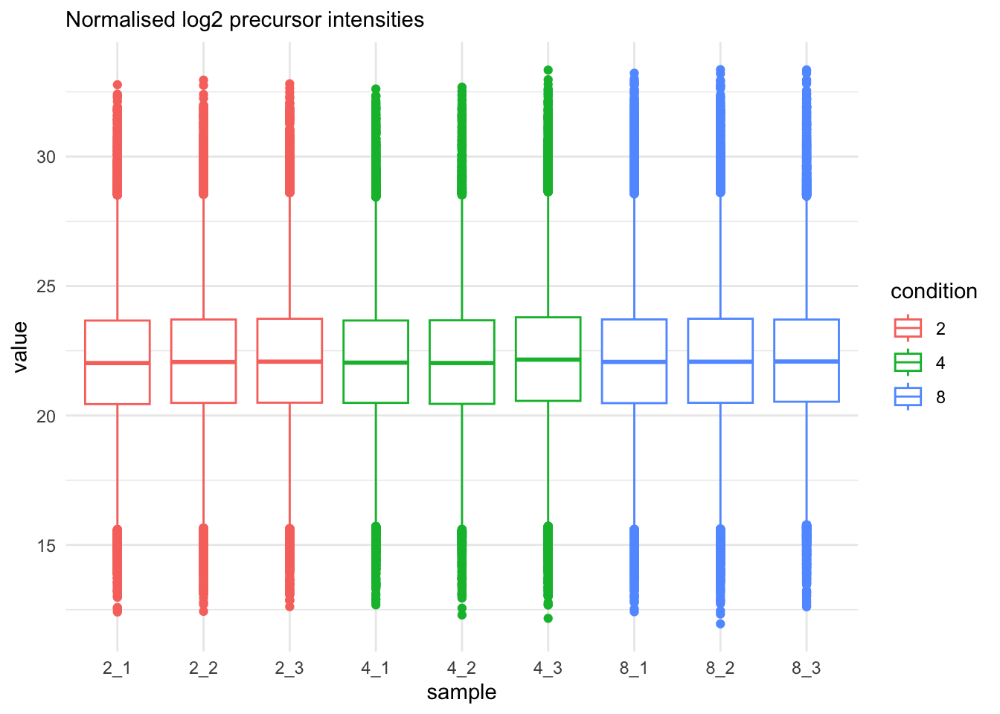
qf[, , "proteins"] |>
longForm(colvars = colnames(colData(qf))) |>
data.frame() |>
filter(!is.na(value)) |>
ggplot() +
aes(x = sampleId,
y = value,
colour = condition,
group = colname) +
xlab("sample") +
geom_boxplot() +
theme_minimal() +
labs(subtitle = "Normalised log2 protein intensities")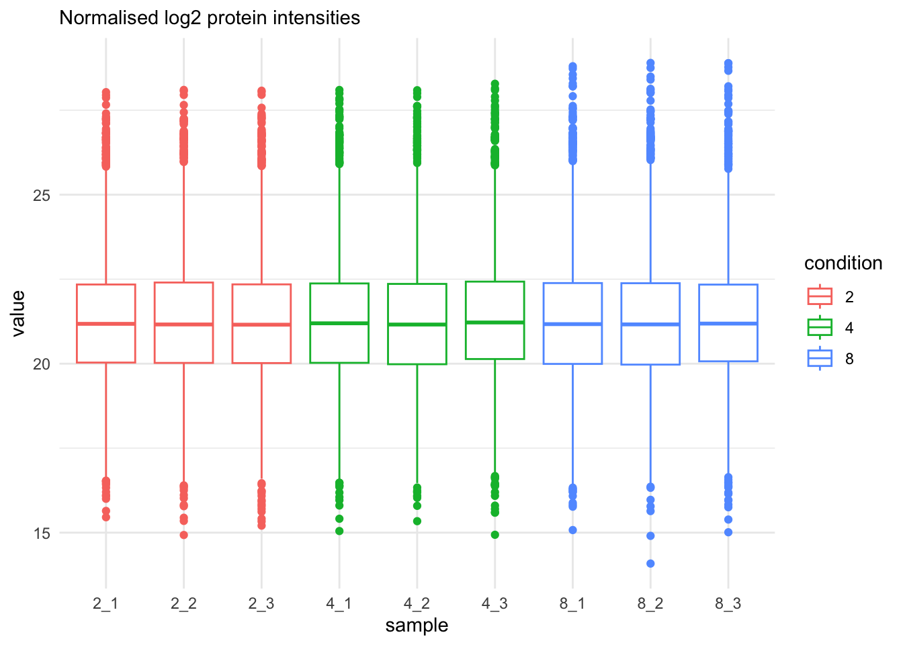
qf[, , "proteins"] |>
longForm(colvars = colnames(colData(qf))) |>
data.frame() |>
filter(!is.na(value)) |>
ggplot() +
aes(x = value,
colour = condition,
group = colname) +
geom_density() +
theme_minimal() +
labs(subtitle = "Normalised log2 protein intensities")
5.2 Charge state
qf[, , "precursors_norm"] |>
longForm(colvars = colnames(colData(qf)), rowvars = "Precursor.Charge") |>
as.data.frame() |>
filter(!is.na(value)) |>
filter(Precursor.Charge<=4) |>
ggplot(aes(x = sampleId)) +
geom_bar(aes(fill = factor(Precursor.Charge, levels = 4:1)),
colour = "black") +
labs(title = "Peptide types per sample",
x = "Sample",
fill = "Charge state") +
theme_bw()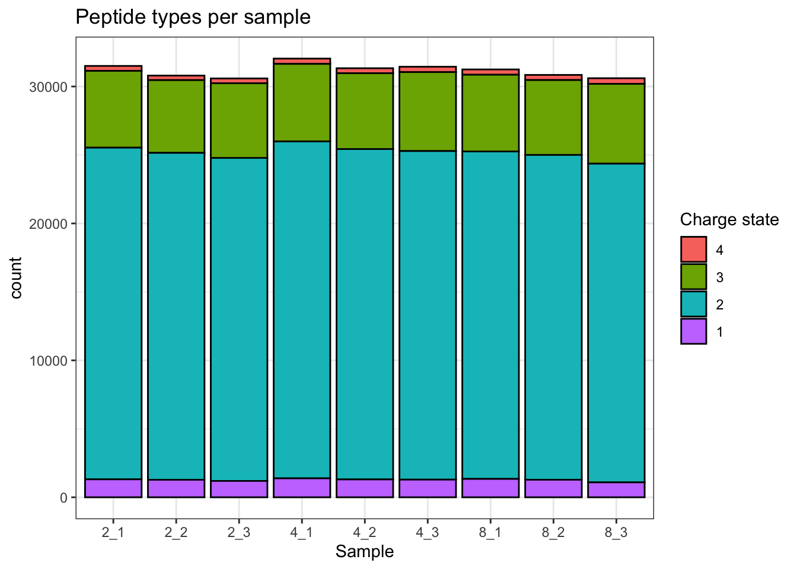
5.3 Identifications per sample
qf[,,"precursors_norm"] |>
longForm(colvars = colnames(colData(qf)),
rowvars= c("Precursor.Id",
"Protein.Group",
"Stripped.Sequence",
"Precursor.Charge")) |>
data.frame() |>
filter(!is.na(value)) |>
mutate(cond_rep = paste0("ratio", condition, "_", rep)) |>
group_by(condition, cond_rep) |>
summarise(Precursors = length(unique(Precursor.Id)),
`Protein Groups` = length(unique(Protein.Group))) |>
pivot_longer(-(1:2),
names_to = "Feature",
values_to = "IDs") |>
ggplot(aes(x = cond_rep, y = IDs, fill = condition)) +
geom_col() +
#scale_fill_observable() +
facet_wrap(~Feature,
scales = "free_y") +
labs(title = "Precursor and protein group identificiations per sample",
x = "Sample",
y = "Identifications") +
theme_bw() +
theme(axis.text.x = element_text(angle = 90))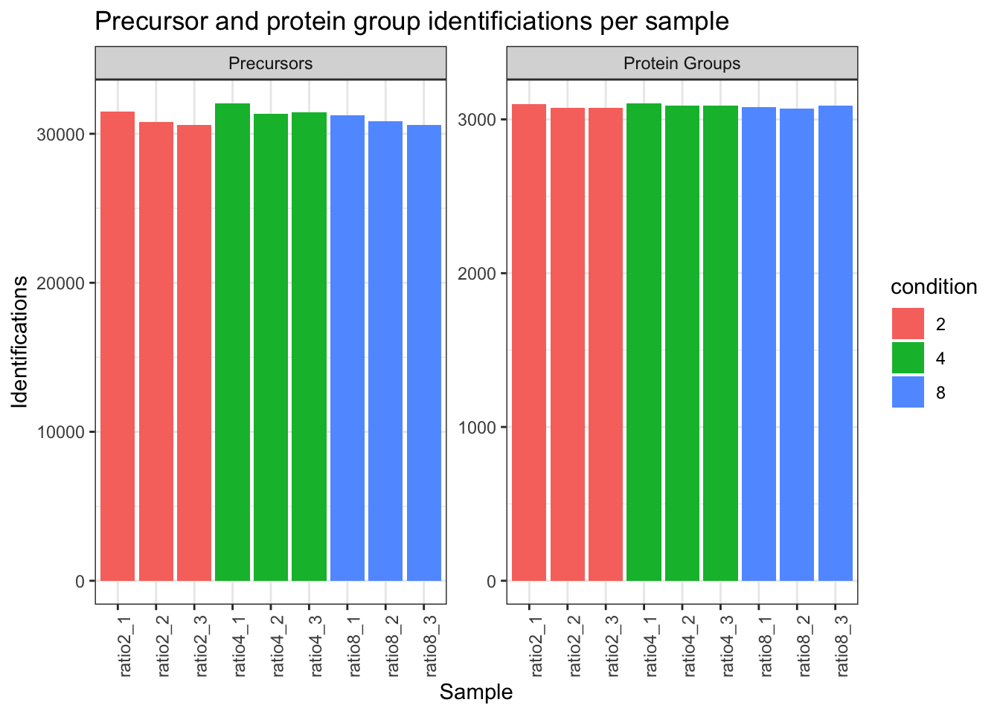
# Data Modeling (Robust Regression){#sec-modelling}5.4 Dimensionality reduction plot
A common approach for data exploration is to perform dimension reduction, such as Multi Dimensional Scaling (MDS). We will first extract the set to explore along the sample annotations (used for plot colouring).
se <- getWithColData(qf, "proteins")We then use the scater package to compute and plot the PCA. For technical reasons, it requires SingleCellExperiment class object, but these can easily be generated from a SummarizedExperiment object.
se <- runMDS(as(se, "SingleCellExperiment"), exprs_values = 1)We can now explore the data structure while coloring for the factor of interest, here condition.
plotMDS(se, colour_by = "condition", shape_by = "rep", point_size = 3) 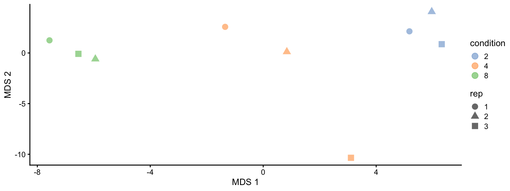
This plot reveals interesting information. First, we see that the samples are nicely separated according to their spike-in condition. Interestingly, the conditions are sorted by the concentration.
5.5 Correlation matrix
corMat <- qf[["proteins"]] |>
assay() |>
cor(method = "spearman", use = "pairwise.complete.obs")
colnames(corMat) <- qf$sampleId
rownames(corMat) <- qf$sampleId
corMat |>
ggcorrplot::ggcorrplot() +
scale_fill_viridis_c() +
labs(title = "Correlation matrix",
fill = "Correlation") +
theme(axis.text.x = element_text(angle = 90))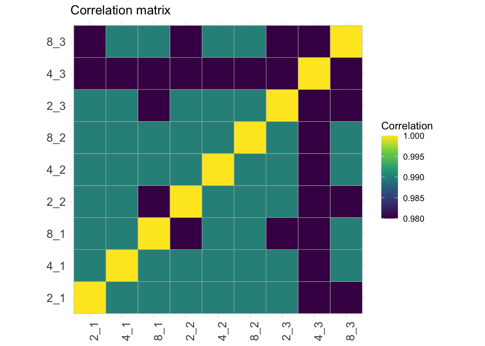
6 Data Modeling (Robust Regression)
We model the preprocessed data to answer biologically relevant questions. As described above, each sample has been synthetically created to contain a constant human background where E. coli lysates were spiked in at five different concentration. Each sample preparation has been replicated three times. So, the key question is “can our model retrieve the proteins that have been spiked in across the conditions?” Moreover, since we know the expected protein abundance in each sample, we will also be able to assess how accurate the model can estimate the average fold changes between spike-in conditions.
6.1 Sources of variation
In this experimental design, we can model a single source of variation: spike-in concentration8. All remaining sources of variability, e.g. pipetting errors, MS run to run variability, etc will be lumped in the residual variability (error term).
Spike-in condition effects: we model the source of variation induced by the experimental treatment of interest as a fixed effect, which we consider non-random, i.e. the treatment effect is assumed to be the same in repeated experiments, but it is unknown and has to be estimated.
When modelling a typical label-free experiment at the protein level, the model boils down to the following linear model:
\[ y_i = \mathbf{x}^T_i \boldsymbol{\beta} + \epsilon_i \]
with \(y_i\) the \(\log_2\)-normalised and summarised protein intensities in sample \(i\); \(\mathbf{x}_i\) a vector with the covariate pattern for the sample encoding the intercept, spike-in condition9, or other experimental factors; \(\boldsymbol{\beta}\) the vector of parameters that model the association between the covariates and the outcome; and \(\epsilon_i\) the residuals reflecting variation that is not captured by the fixed effects. Note that \(\mathbf{x}_i\) allows for a flexible parameterisation of the treatment beyond a single covariate, i.e. including a 1 for the intercept, continuous and categorical variables as well as their interactions. We assume the residuals to be independent and identically distributed (i.i.d) according to a normal distribution with zero mean and constant variance, i.e. \(\epsilon_{i} \sim N(0,\sigma_\epsilon^2)\), that can differ from protein to protein.
In R, this model is encoded using the following simple formula10:
model <- ~ condition6.2 Model estimation
We estimate the model with msqrob(). The function takes the QFeatures object, extracts the quantitative values from the "proteins" set generated during summarisation, and fits a simple linear model with condition as covariate, which are automatically retrieved from colData(qf).
qf <- msqrob(
qf, i = "proteins",
formula = model,
robust = TRUE
)We enable M-estimation (robust = TRUE) for improved robustness against outliers.
The fitting results are available in the msqrobModels column of the rowData. More specifically, the modelling output is stored in the rowData as a statModel object, one model per row (protein). We will see in a later section how to perform statistical inference on the estimated parameters.
models <- rowData(qf[["proteins"]])[["msqrobModels"]]
models[1:3]$D6VTK4
Object of class "StatModel"
The type is "rlm"
There number of elements is 5
$O13297
Object of class "StatModel"
The type is "rlm"
There number of elements is 5
$O13329
Object of class "StatModel"
The type is "rlm"
There number of elements is 5 6.3 Statistical inference
We can now convert the research question “do the spike-in conditions affect the protein intensities?” into a statistical hypothesis.
In other words, we need to translate this question in a null and alternative hypothesis on a single model parameter or a linear combination of model parameters, which is also referred to with a contrast.
To aid defining contrasts, we will visualise the experimental design using the ExploreModelMatrix package.
vd <- ExploreModelMatrix::VisualizeDesign(
sampleData = colData(qf),
designFormula = model,
textSizeFitted = 4
)
vd$plotlist[[1]]
This plot shows that the average protein \(\log_2\) intensity for condition2 is modelled by (Intercept), for the condition4 group by (Intercept) + condtion4 and for the condition8 group by (Intercept) + condtion8.
Hence, to assess differential abundance of proteins between spike-in conditions, we will have to assess all pairwise combinations between the spike-in groups, which leads to 3 different contrasts, i.e. the log2 fold change between ratio 4 and ratio 2, \(\log_2 FC_{4-2} = (Intercept + condition4) - Intercept = condition4\), the log2 fold change between ratio 8 and ratio 2, \(\log_2 FC_{8-2} = (Intercept + condition8) - Intercept = condition8\), and the log2 fold change between ratio 8 and ratio 4, \(\log_2 FC_{8-4} = (Intercept + condition8) - (Intercept+condition4) = condition8 - condition4\).
6.3.1 Hypothesis testing
As shown above, the average difference in log2 intensity between condition 4 and 2 after correcting for the lab effect is condition4. This combination of parameters is also called a contrast. Thus, we assess the following null hypothesis for this contrast: condition4 = 0 with our statistical test.
contrast <- "condition4 = 0"makeContrast() converts the hypothesis into a formal contrast matrix with parameter names as rows and hypotheses in columns11. The function makeContrast() also has an argument parameterNames in which we have to provide all parameter names involved in the contrast. Since we already used the VisualizeDesign we have a design matrix with all parameter names in the columns.
(L <- makeContrast(
contrast,
parameterNames = colnames(vd$designmatrix)
)) condition4
(Intercept) 0
condition4 1
condition8 0We can now test our null hypothesis using hypothesisTest() which takes the QFeatures object with the fitted model and the contrast we just built. msqrob2 automatically applies the hypothesis testing to all proteins in the data.
qf <- hypothesisTest(qf, i = "proteins", contrast = L)The results are stored in the set containing the model, here proteins. We retrieve the results from the rowData. Note, that for this spike-in study we know the ground truth, so we also add variable isUPS to indicate if the protein is spiked (UPS).
inference <- rowData(qf[["proteins"]])$condition4
head(inference) logFC se df t pval adjPval
D6VTK4 -0.23801695 0.14034009 8.161090 -1.6960011 0.1275814 0.9772066
O13297 0.05849675 0.08216221 7.355887 0.7119666 0.4984389 0.9921097
O13329 0.23090760 0.16847629 4.387683 1.3705644 0.2364537 0.9921097
O13539 0.04874904 0.16460358 8.300573 0.2961603 0.7743826 0.9921097
O13563 0.17430361 0.15055164 8.353006 1.1577662 0.2789905 0.9921097
O13585 -0.09126407 0.13330308 7.593823 -0.6846359 0.5139216 0.9921097However, it is easier to use the novel getter function from msqrob2 msqrobCollect
inference <- msqrobCollect(qf[["proteins"]], L)
head(inference) logFC se df t pval
condition4.D6VTK4 -0.23801695 0.14034009 8.161090 -1.6960011 0.1275814
condition4.O13297 0.05849675 0.08216221 7.355887 0.7119666 0.4984389
condition4.O13329 0.23090760 0.16847629 4.387683 1.3705644 0.2364537
condition4.O13539 0.04874904 0.16460358 8.300573 0.2961603 0.7743826
condition4.O13563 0.17430361 0.15055164 8.353006 1.1577662 0.2789905
condition4.O13585 -0.09126407 0.13330308 7.593823 -0.6846359 0.5139216
adjPval contrast feature
condition4.D6VTK4 0.9772066 condition4 D6VTK4
condition4.O13297 0.9921097 condition4 O13297
condition4.O13329 0.9921097 condition4 O13329
condition4.O13539 0.9921097 condition4 O13539
condition4.O13563 0.9921097 condition4 O13563
condition4.O13585 0.9921097 condition4 O13585Note, that missing values can occur because data modelling resulted in a fitError (the advanced vignette describes how to deal with proteins that could not be fit).
The results also include an adjusted p-value for each protein \(j\) to correct for multiple testing using the Benjamini-Hochberg False Discovery Rate (FDR) method, which represents an estimate of the minimum FDR at which the test result for protein \(j\) is considered significant, i.e. the expected fraction of false positives that are reported in the shortest top list of the most significant proteins that include protein \(j\).
6.3.2 Volcano plots
A volcano plot is a common visualisation that provides an overview of the hypothesis testing results, plotting the \(-\log_{10}\) p-value12 as a function of the estimated log fold change. Volcano plots can be used to highlight the most interesting proteins that have large fold changes and/or are highly significant. We can use the table above directly to build a volcano plot using ggplot2 functionality. We also highlight which proteins are UPS standards, known to be differentially abundant by experimental design.
alpha <- 0.05
volcano <- plotVolcano(inference,significanceLevel = alpha) +
labs(subtitle = paste0(colnames(L), " = 0"))
volcano 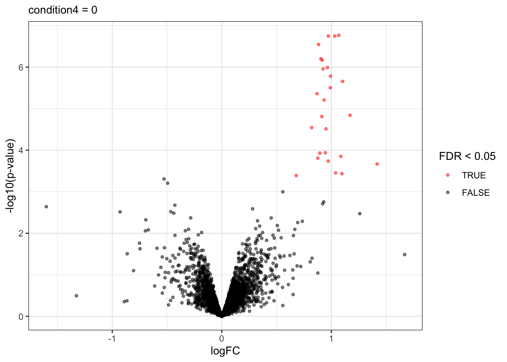
Note, that the log fold changes are nicely around the real log2 fold change: \(\log_2(4/2) = 1\)
signif <- inference |>
filter(adjPval < alpha) |>
arrange(pval)
knitr::kable(signif)| logFC | se | df | t | pval | adjPval | contrast | feature | |
|---|---|---|---|---|---|---|---|---|
| condition4.UPS|P06732ups|KCRM_HUMAN_UPS | 1.0679244 | 0.0655141 | 8.121832 | 16.300685 | 0.0000002 | 0.0001859 | condition4 | UPS|P06732ups|KCRM_HUMAN_UPS |
| condition4.UPS|P02768ups|ALBU_HUMAN_UPS | 0.9734173 | 0.0605796 | 8.174745 | 16.068388 | 0.0000002 | 0.0001859 | condition4 | UPS|P02768ups|ALBU_HUMAN_UPS |
| condition4.UPS|P63165ups|SUMO1_HUMAN_UPS | 1.0310697 | 0.0619119 | 7.963431 | 16.653831 | 0.0000002 | 0.0001859 | condition4 | UPS|P63165ups|SUMO1_HUMAN_UPS |
| condition4.UPS|Q06830ups|PRDX1_HUMAN_UPS | 0.8834029 | 0.0598683 | 8.348423 | 14.755776 | 0.0000003 | 0.0002211 | condition4 | UPS|Q06830ups|PRDX1_HUMAN_UPS |
| condition4.UPS|P04040ups|CATA_HUMAN_UPS | 0.9047806 | 0.0675608 | 8.337497 | 13.392086 | 0.0000006 | 0.0003514 | condition4 | UPS|P04040ups|CATA_HUMAN_UPS |
| condition4.UPS|P00918ups|CAH2_HUMAN_UPS | 0.9171646 | 0.0676703 | 8.187454 | 13.553425 | 0.0000007 | 0.0003514 | condition4 | UPS|P00918ups|CAH2_HUMAN_UPS |
| condition4.UPS|P15559ups|NQO1_HUMAN_UPS | 0.9649344 | 0.0763336 | 8.310890 | 12.641016 | 0.0000010 | 0.0004303 | condition4 | UPS|P15559ups|NQO1_HUMAN_UPS |
| condition4.UPS|P01008ups|ANT3_HUMAN_UPS | 0.9247493 | 0.0746330 | 8.387683 | 12.390616 | 0.0000011 | 0.0004303 | condition4 | UPS|P01008ups|ANT3_HUMAN_UPS |
| condition4.UPS|P12081ups|SYHC_HUMAN_UPS | 0.9929825 | 0.0729802 | 7.408840 | 13.606182 | 0.0000017 | 0.0005705 | condition4 | UPS|P12081ups|SYHC_HUMAN_UPS |
| condition4.UPS|P02753ups|RETBP_HUMAN_UPS | 1.1034300 | 0.0890694 | 7.749185 | 12.388430 | 0.0000022 | 0.0006865 | condition4 | UPS|P02753ups|RETBP_HUMAN_UPS |
| condition4.UPS|P62937ups|PPIA_HUMAN_UPS | 0.9904141 | 0.0700004 | 6.682371 | 14.148696 | 0.0000031 | 0.0008885 | condition4 | UPS|P62937ups|PPIA_HUMAN_UPS |
| condition4.UPS|P00915ups|CAH1_HUMAN_UPS | 0.8692129 | 0.0827063 | 8.315824 | 10.509634 | 0.0000044 | 0.0011300 | condition4 | UPS|P00915ups|CAH1_HUMAN_UPS |
| condition4.UPS|P02144ups|MYG_HUMAN_UPS | 0.9340019 | 0.0857608 | 7.666888 | 10.890774 | 0.0000062 | 0.0014803 | condition4 | UPS|P02144ups|MYG_HUMAN_UPS |
| condition4.UPS|O76070ups|SYUG_HUMAN_UPS | 1.1710899 | 0.0980053 | 6.311022 | 11.949250 | 0.0000144 | 0.0031935 | condition4 | UPS|O76070ups|SYUG_HUMAN_UPS |
| condition4.UPS|P69905ups|HBA_HUMAN_UPS | 0.9129464 | 0.1007957 | 8.163326 | 9.057390 | 0.0000155 | 0.0032116 | condition4 | UPS|P69905ups|HBA_HUMAN_UPS |
| condition4.UPS|P62988ups|UBIQ_HUMAN_UPS | 0.8212398 | 0.0914189 | 7.485462 | 8.983259 | 0.0000286 | 0.0055518 | condition4 | UPS|P62988ups|UBIQ_HUMAN_UPS |
| condition4.UPS|P63279ups|UBC9_HUMAN_UPS | 0.9516051 | 0.1065792 | 7.452074 | 8.928615 | 0.0000307 | 0.0056032 | condition4 | UPS|P63279ups|UBC9_HUMAN_UPS |
| condition4.UPS|P01031ups|CO5_HUMAN_UPS | 0.9458928 | 0.1382139 | 8.230139 | 6.843686 | 0.0001154 | 0.0192653 | condition4 | UPS|P01031ups|CO5_HUMAN_UPS |
| condition4.UPS|P68871ups|HBB_HUMAN_UPS | 0.8944811 | 0.1327261 | 8.387683 | 6.739301 | 0.0001178 | 0.0192653 | condition4 | UPS|P68871ups|HBB_HUMAN_UPS |
| condition4.UPS|Q15843ups|NEDD8_HUMAN_UPS | 1.0867423 | 0.1582293 | 7.839875 | 6.868148 | 0.0001414 | 0.0219585 | condition4 | UPS|Q15843ups|NEDD8_HUMAN_UPS |
| condition4.UPS|P08263ups|GSTA1_HUMAN_UPS | 0.8764599 | 0.1239911 | 7.374564 | 7.068735 | 0.0001557 | 0.0230276 | condition4 | UPS|P08263ups|GSTA1_HUMAN_UPS |
| condition4.UPS|P00167ups|CYB5_HUMAN_UPS | 0.9717567 | 0.1531025 | 8.357634 | 6.347101 | 0.0001836 | 0.0259262 | condition4 | UPS|P00167ups|CYB5_HUMAN_UPS |
| condition4.UPS|P55957ups|BID_HUMAN_UPS | 1.4181553 | 0.2112007 | 7.387683 | 6.714729 | 0.0002155 | 0.0291081 | condition4 | UPS|P55957ups|BID_HUMAN_UPS |
| condition4.UPS|P41159ups|LEP_HUMAN_UPS | 1.0397353 | 0.1734041 | 7.835844 | 5.996024 | 0.0003523 | 0.0455939 | condition4 | UPS|P41159ups|LEP_HUMAN_UPS |
| condition4.UPS|P61626ups|LYSC_HUMAN_UPS | 1.0970014 | 0.1753345 | 7.238773 | 6.256620 | 0.0003680 | 0.0457211 | condition4 | UPS|P61626ups|LYSC_HUMAN_UPS |
| condition4.P40344 | 0.6791563 | 0.1189167 | 8.206494 | 5.711194 | 0.0004085 | 0.0488009 | condition4 | P40344 |
Note, that we return many true positives and one false positive.
6.3.3 Heatmap
We can explore the quantitative data of the significant proteins using a heatmap. First, we select the names of the proteins that were declared significant between condition A and condition B and extract their quantitative data.
sig <- inference |>
filter(adjPval < alpha) |>
arrange(pval) |>
pull(feature) #1.Next, we extract the quantitative data and scale by rows13 with assay(). We will create a heatmap using the ComplexHeatmap package, which enables heatmap annotations. We will annotate the heatmap using our model variables condition and lab.
se <- getWithColData(qf, "proteins")
quants <- t(scale(t(assay(se[sig,])))) #2.
colnames(quants) <- paste0("con", se$condition,"_rep",se$rep) #specific to this dataset to get short colnames
annotations <- columnAnnotation(
condition = se$condition
) #3.We now make the heatmap.
set.seed(1234) ## annotation colours are randomly generated by default
heatmap <- Heatmap(
quants,
name = "log2 intensity",
top_annotation = annotations,
column_title = contrast
) #4.
heatmap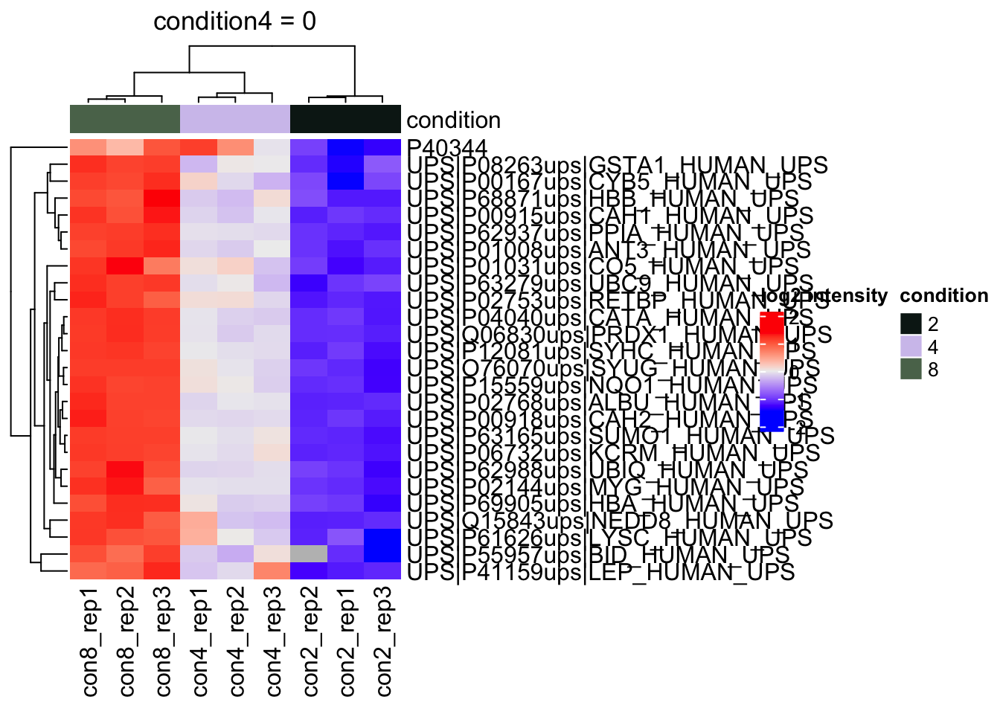
6.4 All contrasts
With the createPairwiseContrast function we can make all pairwise contrasts for a model.
(allHypotheses <- createPairwiseContrasts(
model, colData(qf), "condition"
)
)[1] "condition4 = 0" "condition8 = 0"
[3] "condition8 - condition4 = 0"(L <- makeContrast(
allHypotheses,
parameterNames = colnames(vd$designmatrix)
)) condition4 condition8 condition8 - condition4
(Intercept) 0 0 0
condition4 1 0 -1
condition8 0 1 1qf <- hypothesisTest(qf,
i = "proteins",
contrast = L,
overwrite = TRUE)6.4.1 List with significant differentially abundant proteins
inferences <- msqrobCollect(qf[["proteins"]], L)for (j in colnames(L)) #3.
{
inference <- inferences |> filter(adjPval < alpha & contrast == j)
cat("**Contrast:**", j, "= 0 (", nrow(inference |> filter(adjPval < alpha)), "significant proteins)\n\n") #8.
print(kable(inference |> arrange(pval) |> relocate("feature"), row.names = FALSE)) #9.
cat("\n\n\n---\n\n") #10.
}Contrast: condition4 = 0 ( 26 significant proteins)
| feature | logFC | se | df | t | pval | adjPval | contrast |
|---|---|---|---|---|---|---|---|
| UPS|P06732ups|KCRM_HUMAN_UPS | 1.0679244 | 0.0655141 | 8.121832 | 16.300685 | 0.0000002 | 0.0001859 | condition4 |
| UPS|P02768ups|ALBU_HUMAN_UPS | 0.9734173 | 0.0605796 | 8.174745 | 16.068388 | 0.0000002 | 0.0001859 | condition4 |
| UPS|P63165ups|SUMO1_HUMAN_UPS | 1.0310697 | 0.0619119 | 7.963431 | 16.653831 | 0.0000002 | 0.0001859 | condition4 |
| UPS|Q06830ups|PRDX1_HUMAN_UPS | 0.8834029 | 0.0598683 | 8.348423 | 14.755776 | 0.0000003 | 0.0002211 | condition4 |
| UPS|P04040ups|CATA_HUMAN_UPS | 0.9047806 | 0.0675608 | 8.337497 | 13.392086 | 0.0000006 | 0.0003514 | condition4 |
| UPS|P00918ups|CAH2_HUMAN_UPS | 0.9171646 | 0.0676703 | 8.187454 | 13.553425 | 0.0000007 | 0.0003514 | condition4 |
| UPS|P15559ups|NQO1_HUMAN_UPS | 0.9649344 | 0.0763336 | 8.310890 | 12.641016 | 0.0000010 | 0.0004303 | condition4 |
| UPS|P01008ups|ANT3_HUMAN_UPS | 0.9247493 | 0.0746330 | 8.387683 | 12.390616 | 0.0000011 | 0.0004303 | condition4 |
| UPS|P12081ups|SYHC_HUMAN_UPS | 0.9929825 | 0.0729802 | 7.408840 | 13.606182 | 0.0000017 | 0.0005705 | condition4 |
| UPS|P02753ups|RETBP_HUMAN_UPS | 1.1034300 | 0.0890694 | 7.749185 | 12.388430 | 0.0000022 | 0.0006865 | condition4 |
| UPS|P62937ups|PPIA_HUMAN_UPS | 0.9904141 | 0.0700004 | 6.682371 | 14.148696 | 0.0000031 | 0.0008885 | condition4 |
| UPS|P00915ups|CAH1_HUMAN_UPS | 0.8692129 | 0.0827063 | 8.315824 | 10.509634 | 0.0000044 | 0.0011300 | condition4 |
| UPS|P02144ups|MYG_HUMAN_UPS | 0.9340019 | 0.0857608 | 7.666888 | 10.890774 | 0.0000062 | 0.0014803 | condition4 |
| UPS|O76070ups|SYUG_HUMAN_UPS | 1.1710899 | 0.0980053 | 6.311022 | 11.949250 | 0.0000144 | 0.0031935 | condition4 |
| UPS|P69905ups|HBA_HUMAN_UPS | 0.9129464 | 0.1007957 | 8.163326 | 9.057390 | 0.0000155 | 0.0032116 | condition4 |
| UPS|P62988ups|UBIQ_HUMAN_UPS | 0.8212398 | 0.0914189 | 7.485462 | 8.983259 | 0.0000286 | 0.0055518 | condition4 |
| UPS|P63279ups|UBC9_HUMAN_UPS | 0.9516051 | 0.1065792 | 7.452074 | 8.928615 | 0.0000307 | 0.0056032 | condition4 |
| UPS|P01031ups|CO5_HUMAN_UPS | 0.9458928 | 0.1382139 | 8.230139 | 6.843686 | 0.0001154 | 0.0192653 | condition4 |
| UPS|P68871ups|HBB_HUMAN_UPS | 0.8944811 | 0.1327261 | 8.387683 | 6.739301 | 0.0001178 | 0.0192653 | condition4 |
| UPS|Q15843ups|NEDD8_HUMAN_UPS | 1.0867423 | 0.1582293 | 7.839875 | 6.868148 | 0.0001414 | 0.0219585 | condition4 |
| UPS|P08263ups|GSTA1_HUMAN_UPS | 0.8764599 | 0.1239911 | 7.374564 | 7.068735 | 0.0001557 | 0.0230276 | condition4 |
| UPS|P00167ups|CYB5_HUMAN_UPS | 0.9717567 | 0.1531025 | 8.357634 | 6.347101 | 0.0001836 | 0.0259262 | condition4 |
| UPS|P55957ups|BID_HUMAN_UPS | 1.4181553 | 0.2112007 | 7.387683 | 6.714729 | 0.0002155 | 0.0291081 | condition4 |
| UPS|P41159ups|LEP_HUMAN_UPS | 1.0397353 | 0.1734041 | 7.835844 | 5.996024 | 0.0003523 | 0.0455939 | condition4 |
| UPS|P61626ups|LYSC_HUMAN_UPS | 1.0970014 | 0.1753345 | 7.238773 | 6.256620 | 0.0003680 | 0.0457211 | condition4 |
| P40344 | 0.6791563 | 0.1189167 | 8.206494 | 5.711194 | 0.0004085 | 0.0488009 | condition4 |
Contrast: condition8 = 0 ( 29 significant proteins)
| feature | logFC | se | df | t | pval | adjPval | contrast |
|---|---|---|---|---|---|---|---|
| UPS|Q06830ups|PRDX1_HUMAN_UPS | 2.0212066 | 0.0596708 | 8.348423 | 33.872630 | 0.0000000 | 0.0000004 | condition8 |
| UPS|P02768ups|ALBU_HUMAN_UPS | 2.1086656 | 0.0617259 | 8.174745 | 34.161756 | 0.0000000 | 0.0000004 | condition8 |
| UPS|P06732ups|KCRM_HUMAN_UPS | 2.1693005 | 0.0639774 | 8.121832 | 33.907319 | 0.0000000 | 0.0000004 | condition8 |
| UPS|P04040ups|CATA_HUMAN_UPS | 2.1149886 | 0.0675608 | 8.337497 | 31.304949 | 0.0000000 | 0.0000004 | condition8 |
| UPS|P63165ups|SUMO1_HUMAN_UPS | 2.0938719 | 0.0613464 | 7.963431 | 34.131944 | 0.0000000 | 0.0000004 | condition8 |
| UPS|P00918ups|CAH2_HUMAN_UPS | 2.0637024 | 0.0688696 | 8.187454 | 29.965374 | 0.0000000 | 0.0000006 | condition8 |
| UPS|P01008ups|ANT3_HUMAN_UPS | 2.0862267 | 0.0746330 | 8.387683 | 27.953125 | 0.0000000 | 0.0000006 | condition8 |
| UPS|P15559ups|NQO1_HUMAN_UPS | 1.9745530 | 0.0759657 | 8.310890 | 25.992699 | 0.0000000 | 0.0000012 | condition8 |
| UPS|P00915ups|CAH1_HUMAN_UPS | 2.0568708 | 0.0832122 | 8.315824 | 24.718386 | 0.0000000 | 0.0000015 | condition8 |
| UPS|P12081ups|SYHC_HUMAN_UPS | 2.1112061 | 0.0729802 | 7.408840 | 28.928462 | 0.0000000 | 0.0000021 | condition8 |
| UPS|P02753ups|RETBP_HUMAN_UPS | 2.1184331 | 0.0931950 | 7.749185 | 22.731194 | 0.0000000 | 0.0000063 | condition8 |
| UPS|P69905ups|HBA_HUMAN_UPS | 2.0671465 | 0.1007957 | 8.163326 | 20.508271 | 0.0000000 | 0.0000063 | condition8 |
| UPS|P62937ups|PPIA_HUMAN_UPS | 2.1645796 | 0.0738912 | 6.682371 | 29.294136 | 0.0000000 | 0.0000063 | condition8 |
| UPS|P02144ups|MYG_HUMAN_UPS | 2.0388977 | 0.0922925 | 7.666888 | 22.091683 | 0.0000000 | 0.0000071 | condition8 |
| UPS|P63279ups|UBC9_HUMAN_UPS | 2.2075190 | 0.1040651 | 7.452074 | 21.212865 | 0.0000001 | 0.0000128 | condition8 |
| UPS|O76070ups|SYUG_HUMAN_UPS | 2.4716106 | 0.0903595 | 6.311022 | 27.353073 | 0.0000001 | 0.0000165 | condition8 |
| UPS|P62988ups|UBIQ_HUMAN_UPS | 1.8862515 | 0.0945105 | 7.485462 | 19.958107 | 0.0000001 | 0.0000168 | condition8 |
| UPS|P68871ups|HBB_HUMAN_UPS | 2.0742288 | 0.1327261 | 8.387683 | 15.627889 | 0.0000002 | 0.0000294 | condition8 |
| UPS|Q15843ups|NEDD8_HUMAN_UPS | 2.3621942 | 0.1500699 | 7.839875 | 15.740626 | 0.0000003 | 0.0000534 | condition8 |
| UPS|P00167ups|CYB5_HUMAN_UPS | 2.1648252 | 0.1531025 | 8.357634 | 14.139716 | 0.0000004 | 0.0000616 | condition8 |
| UPS|P08263ups|GSTA1_HUMAN_UPS | 1.9559803 | 0.1227669 | 7.374564 | 15.932474 | 0.0000006 | 0.0000823 | condition8 |
| UPS|P01031ups|CO5_HUMAN_UPS | 1.8733929 | 0.1401160 | 8.230139 | 13.370300 | 0.0000007 | 0.0001015 | condition8 |
| UPS|P55957ups|BID_HUMAN_UPS | 2.8065085 | 0.2112007 | 7.387683 | 13.288351 | 0.0000020 | 0.0002709 | condition8 |
| UPS|P41159ups|LEP_HUMAN_UPS | 1.8815169 | 0.1643878 | 7.835844 | 11.445603 | 0.0000036 | 0.0004694 | condition8 |
| UPS|P61626ups|LYSC_HUMAN_UPS | 2.0407767 | 0.1686354 | 7.238773 | 12.101707 | 0.0000046 | 0.0005708 | condition8 |
| UPS|P16083ups|NQO2_HUMAN_UPS | 2.1463903 | 0.1923086 | 7.564488 | 11.161179 | 0.0000058 | 0.0006867 | condition8 |
| P40547 | 0.7964614 | 0.1099545 | 7.902691 | 7.243553 | 0.0000942 | 0.0108315 | condition8 |
| UPS|P10599ups|THIO_HUMAN_UPS | 2.1247979 | 0.2927780 | 7.280449 | 7.257368 | 0.0001395 | 0.0154698 | condition8 |
| P40344 | 0.6999494 | 0.1170506 | 8.206494 | 5.979888 | 0.0002993 | 0.0320342 | condition8 |
Contrast: condition8 - condition4 = 0 ( 26 significant proteins)
| feature | logFC | se | df | t | pval | adjPval | contrast |
|---|---|---|---|---|---|---|---|
| UPS|Q06830ups|PRDX1_HUMAN_UPS | 1.1378037 | 0.0598683 | 8.348423 | 19.005118 | 0.0000000 | 0.0000632 | condition8 - condition4 |
| UPS|P04040ups|CATA_HUMAN_UPS | 1.2102080 | 0.0672753 | 8.337497 | 17.988891 | 0.0000001 | 0.0000632 | condition8 - condition4 |
| UPS|P02768ups|ALBU_HUMAN_UPS | 1.1352483 | 0.0617259 | 8.174745 | 18.391762 | 0.0000001 | 0.0000632 | condition8 - condition4 |
| UPS|P63165ups|SUMO1_HUMAN_UPS | 1.0628022 | 0.0602267 | 7.963431 | 17.646704 | 0.0000001 | 0.0000696 | condition8 - condition4 |
| UPS|P00918ups|CAH2_HUMAN_UPS | 1.1465378 | 0.0688696 | 8.187454 | 16.647960 | 0.0000001 | 0.0000696 | condition8 - condition4 |
| UPS|P06732ups|KCRM_HUMAN_UPS | 1.1013760 | 0.0655141 | 8.121832 | 16.811287 | 0.0000001 | 0.0000696 | condition8 - condition4 |
| UPS|P01008ups|ANT3_HUMAN_UPS | 1.1614773 | 0.0746330 | 8.387683 | 15.562509 | 0.0000002 | 0.0000781 | condition8 - condition4 |
| UPS|P12081ups|SYHC_HUMAN_UPS | 1.1182237 | 0.0654815 | 7.408840 | 17.076950 | 0.0000003 | 0.0001249 | condition8 - condition4 |
| UPS|P00915ups|CAH1_HUMAN_UPS | 1.1876578 | 0.0832122 | 8.315824 | 14.272645 | 0.0000004 | 0.0001335 | condition8 - condition4 |
| UPS|P15559ups|NQO1_HUMAN_UPS | 1.0096186 | 0.0762105 | 8.310890 | 13.247760 | 0.0000007 | 0.0002120 | condition8 - condition4 |
| UPS|P62937ups|PPIA_HUMAN_UPS | 1.1741655 | 0.0666352 | 6.682371 | 17.620808 | 0.0000008 | 0.0002120 | condition8 - condition4 |
| UPS|P69905ups|HBA_HUMAN_UPS | 1.1542001 | 0.0988186 | 8.163326 | 11.679985 | 0.0000022 | 0.0005762 | condition8 - condition4 |
| UPS|P63279ups|UBC9_HUMAN_UPS | 1.2559139 | 0.1003751 | 7.452074 | 12.512211 | 0.0000029 | 0.0006834 | condition8 - condition4 |
| UPS|P02144ups|MYG_HUMAN_UPS | 1.1048957 | 0.0922925 | 7.666888 | 11.971668 | 0.0000031 | 0.0006895 | condition8 - condition4 |
| UPS|O76070ups|SYUG_HUMAN_UPS | 1.3005207 | 0.0877869 | 6.311022 | 14.814526 | 0.0000039 | 0.0007996 | condition8 - condition4 |
| UPS|P62988ups|UBIQ_HUMAN_UPS | 1.0650117 | 0.0903340 | 7.485462 | 11.789715 | 0.0000042 | 0.0008187 | condition8 - condition4 |
| UPS|P02753ups|RETBP_HUMAN_UPS | 1.0150031 | 0.0938435 | 7.749185 | 10.815914 | 0.0000060 | 0.0010971 | condition8 - condition4 |
| UPS|P68871ups|HBB_HUMAN_UPS | 1.1797477 | 0.1327261 | 8.387683 | 8.888588 | 0.0000150 | 0.0025867 | condition8 - condition4 |
| UPS|P08263ups|GSTA1_HUMAN_UPS | 1.0795204 | 0.1131426 | 7.374564 | 9.541235 | 0.0000208 | 0.0033922 | condition8 - condition4 |
| UPS|P00167ups|CYB5_HUMAN_UPS | 1.1930685 | 0.1527166 | 8.357634 | 7.812301 | 0.0000406 | 0.0063079 | condition8 - condition4 |
| UPS|Q15843ups|NEDD8_HUMAN_UPS | 1.2754519 | 0.1582293 | 7.839875 | 8.060781 | 0.0000464 | 0.0068554 | condition8 - condition4 |
| Q05521 | -0.7257268 | 0.0995652 | 7.760871 | -7.288958 | 0.0000988 | 0.0139397 | condition8 - condition4 |
| UPS|P55957ups|BID_HUMAN_UPS | 1.3883532 | 0.1889036 | 7.387683 | 7.349532 | 0.0001196 | 0.0161341 | condition8 - condition4 |
| P32573 | -0.4321870 | 0.0646625 | 8.387683 | -6.683733 | 0.0001251 | 0.0161774 | condition8 - condition4 |
| UPS|P01031ups|CO5_HUMAN_UPS | 0.9275001 | 0.1401160 | 8.230139 | 6.619516 | 0.0001461 | 0.0181374 | condition8 - condition4 |
| UPS|P16083ups|NQO2_HUMAN_UPS | 1.2156515 | 0.1883306 | 7.564488 | 6.454879 | 0.0002511 | 0.0299775 | condition8 - condition4 |
6.4.2 Volcanoplots
volcanoplots <- inferences |>
plotVolcano() +
facet_wrap(~contrast)
volcanoplots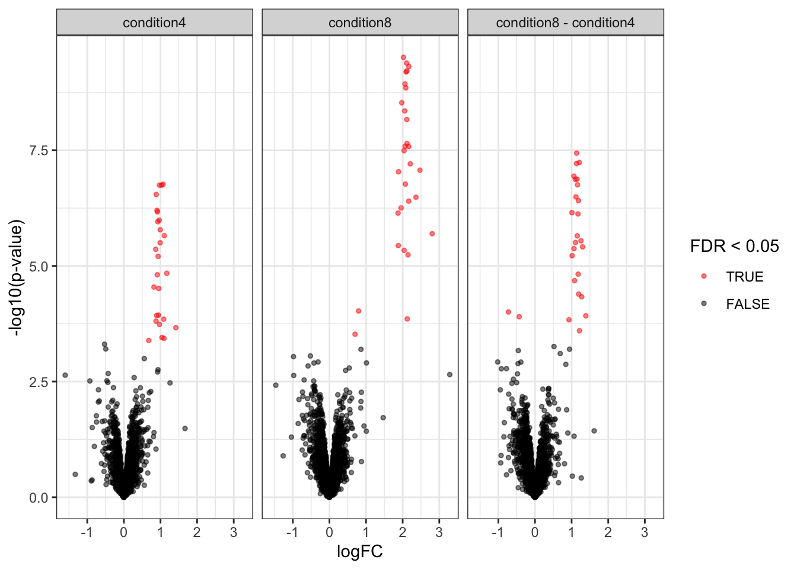
6.4.3 Heatmaps
We conduct heatmaps for the significant metabolites for each contrast.
- We first extract the normalised assay
metabolites_normalong with its colData. - We make an empty list
heatmapsto store the plots. - We will loop over the column names of the contrast matrix
L - We extract the names of the significant features for contrast
i - We extract the quant data for the significant metabolites
- We extract annotation
- We make the heatmap using the quants data. We do not cluster columns (samples) to keep them together according to the design.
heatmaps <- lapply(colnames(L),
function(contrast, se, alpha)
{
sig <- rowData(se)[[contrast]] |>
filter(adjPval < alpha) |>
rownames()
if (length(sig) > 2)
{
quants <- t(scale(t(assay(se[sig,]))))
colnames(quants) <- se$sampleId #specific to this dataset to get short colnames
rowclushlp <- quants
rowclushlp[is.na(rowclushlp)] <- min(quants,na.rm=TRUE) - 2
rowclus <- hclust(dist(rowclushlp))
annotations <- columnAnnotation(
group = se$condition
) #3.
set.seed(1234) ## annotation colours are randomly generated by default
return(
Heatmap(show_row_names = FALSE,
quants,
name = "log2 intensity",
top_annotation = annotations,
column_title = paste0(contrast, " = 0"),
cluster_rows = rowclus
)
)
} else return(ggplot() + theme_minimal() + ggtitle(paste0(contrast, " = 0")))
},
se = getWithColData(qf, "proteins"),
alpha = alpha)
heatmaps[[1]]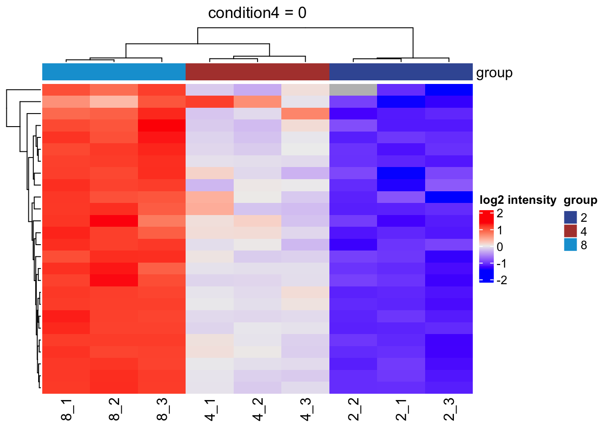
[[2]]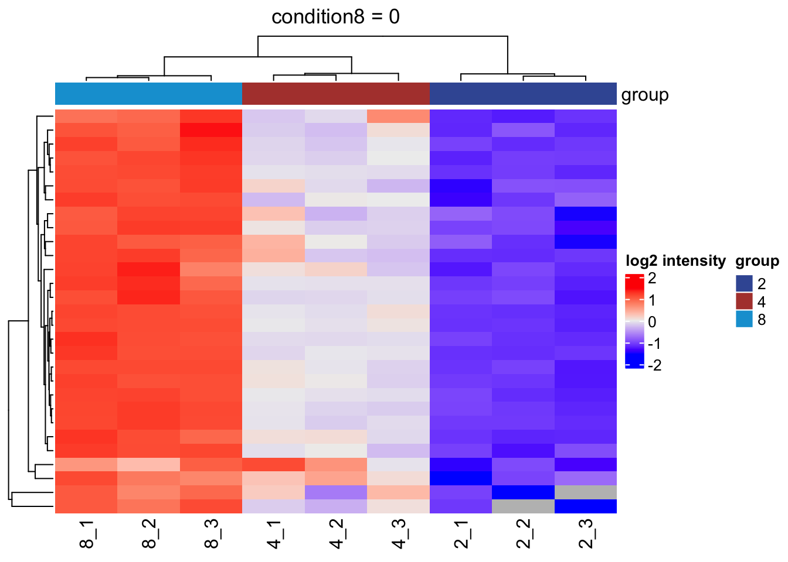
[[3]]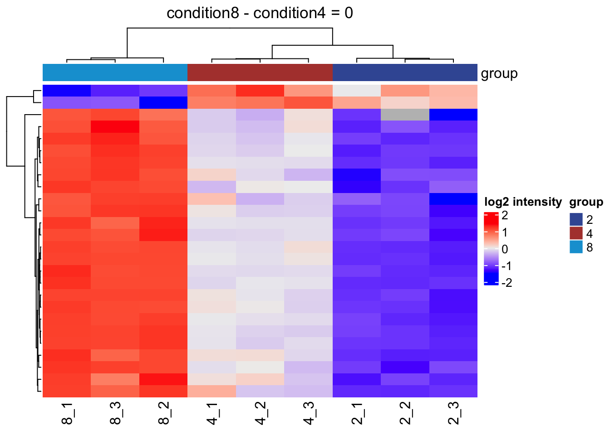
7 Assess performance
Note, that the evaluations in this section are typically not possible on real experimental data. Indeed, we are using a spike-in dataset so we know the ground thruth: all human UPS proteins are differentially abundant (DA) between the conditions and the yeast proteins are non-DA.
7.1 True and false positives
All human UPS proteins are differentially abundant (DA) between the conditions and the yeast proteins are non-DA. For human UPS proteins the pattern “UPS” is in there protein name. We can now assess the number of false positives and true positives at the significance level \(\alpha = 0.05\).
inferences <- inferences |>
mutate(spikein = grepl("UPS", feature) |>
as.factor() |>
recode("FALSE" = "yeast",
"TRUE" = "ups")
)
tpFpTable <- group_by(inferences, contrast) |>
filter(adjPval < alpha) |>
summarise("TP" = sum(spikein=="ups"),
"FP" = sum(spikein!="ups"),
"FDP" = mean(spikein!="ups"))
tpFpTable# A tibble: 3 × 4
contrast TP FP FDP
<chr> <int> <int> <dbl>
1 condition4 25 1 0.0385
2 condition8 27 2 0.0690
3 condition8 - condition4 24 2 0.07697.2 log-fold changes
As this is a spike-in study with known ground truth, we can also plot the log2 fold change distributions against the expected values, in this case 0 for the yeast proteins and the difference of the log concentration for the spiked-in UPS standards. We first create a small table with the real values.
- We extract the levels from factor condition
- We convert then into a number as they refer to the real ratio
- We log2-transform them
- We calculate all pairwise differences between log2 transformed ratio’s to obtain the log2 fold changes
We use a similar operation to construct the name of the corresponding contrast.
(realLogFC <- data.frame(
logFC = colData(qf)$condition |>
unique() |> # 1.
as.double() |> # 2.
log2() |> # 3.
combn(m=2, FUN = diff), #4.
contrast = colData(qf)$condition |>
unique() |>
combn(m=2, FUN= function(x) paste0("condition",x[2]," - condition",x[1])) |>
recode("condition4 - condition2" = "condition4",
"condition8 - condition2" = "condition8")
)
) logFC contrast
1 1 condition4
2 2 condition8
3 1 condition8 - condition4We now evaluate of the estimated fold changes correspond to the real fold changes.
- We plot the log fold changes in function of the spikein condition and color according to spikein condition.
- We add a boxplot layer.
- We use custom colors.
- We add a vertical line at 0, which corresponds to the known log2 fold change for yeast proteins
- We add a vertical lines for known log2 fold changes of the spiked UPS proteins.
logFC <- inferences |>
filter(!is.na(logFC)) |>
ggplot(aes(x = spikein, y = logFC, color= spikein)) + #1.
geom_boxplot() + #2.
theme_bw() +
scale_color_manual(
values = c("grey20", "firebrick"), #3.
name = "",
labels = c("yeast", "ups")
) +
geom_hline(yintercept = 0, color="grey20") + # 4.
facet_wrap(~contrast) +
geom_hline(aes(yintercept = logFC), color="firebrick", data=realLogFC) #5.
logFC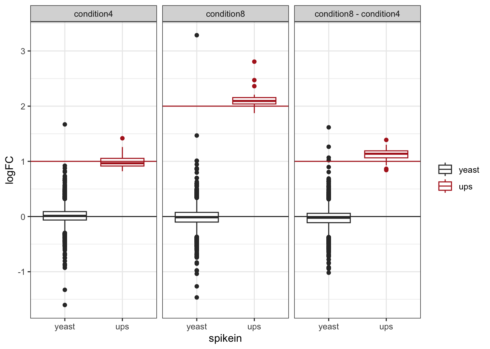
7.3 volcano-plots
- We plot the volcano-plots again per contast,
- We now add information on the protein type (“yeast” or “ups”)
- We add horizontal lines with the adjusted -log10 significant level for the original p-values that corresponds with the nominal 5% FDR-level.
- We add vertical lines that correspond to the real log2 FC of UPS proteins.
volcanoplots <- inferences |>
plotVolcano() +
facet_wrap(~contrast) + #1.
aes(color = spikein, shape = adjPval < alpha) +
scale_color_manual(
values = c("grey20", "firebrick"),
name = "spikein",
labels = c("yeast", "ups")
) + #2.
labs(shape="FDR < 0.05") +
geom_hline(aes(yintercept = -log10(adjAlpha)), data = inferences |>
group_by(contrast) |>
summarize(adjAlpha = alpha *mean(adjPval < alpha, na.rm=TRUE), .groups="drop")) + #3.
geom_vline(aes(xintercept = logFC), data = realLogFC, color = "firebrick") #4.
volcanoplots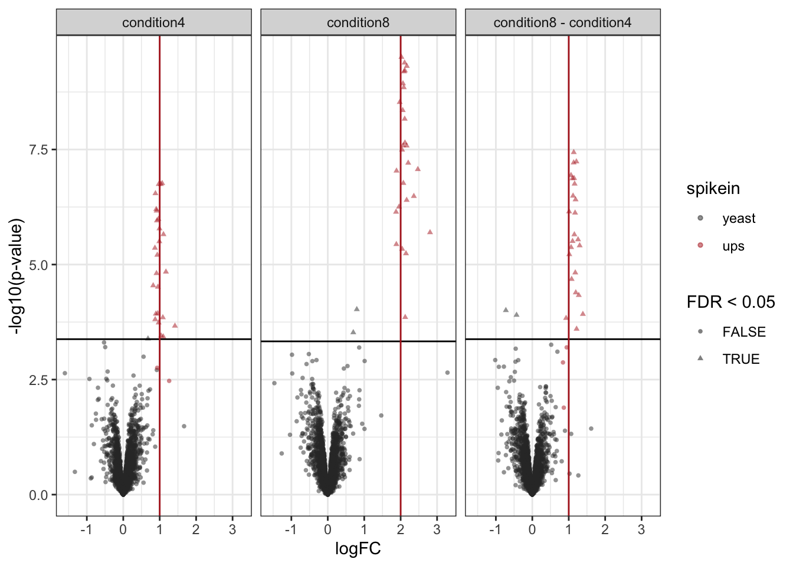
7.4 True positive - False Discovery Proportion plots
We generate the TPR-FDP curves to assess the performance of the different workflows to prioritise differentially abundant proteins. Again, these curves are built using the ground truth information about which proteins are differentially abundant (spiked in) and which proteins are constant across samples. We create two functions to compute the TPR and the FDP.
computeFDP <- function(pval, tp) {
ord <- order(pval)
fdp <- cumsum(!tp[ord]) / 1:length(tp)
fdp[order(ord)]
}
computeTPR <- function(pval, tp, nTP = NULL) {
if (is.null(nTP)) nTP <- sum(tp)
ord <- order(pval)
tpr <- cumsum(tp[ord]) / nTP
tpr[order(ord)]
}We apply these functions and compute the corresponding metric using the statistical inference results and the ground truth information.
performance <- inferences |>
group_by(contrast) |>
na.exclude() |>
mutate(tpr = computeTPR(pval, spikein == "ups"),
fdp = computeFDP(pval, spikein == "ups")) |>
arrange(fdp)We also highlight the observed FDP at a \(alpha = 5\%\) FDR threshold.
workPoints <- performance |>
group_by(contrast) |>
filter(adjPval < alpha) |>
slice_max(pval)ggplot(performance) +
aes(
y = fdp,
x = tpr,
) +
geom_line() +
geom_point(data = workPoints, size = 3) +
geom_hline(yintercept = 0.05, linetype = 2) +
facet_wrap( ~ contrast) +
coord_flip(ylim = c(0, 0.2)) +
theme_minimal()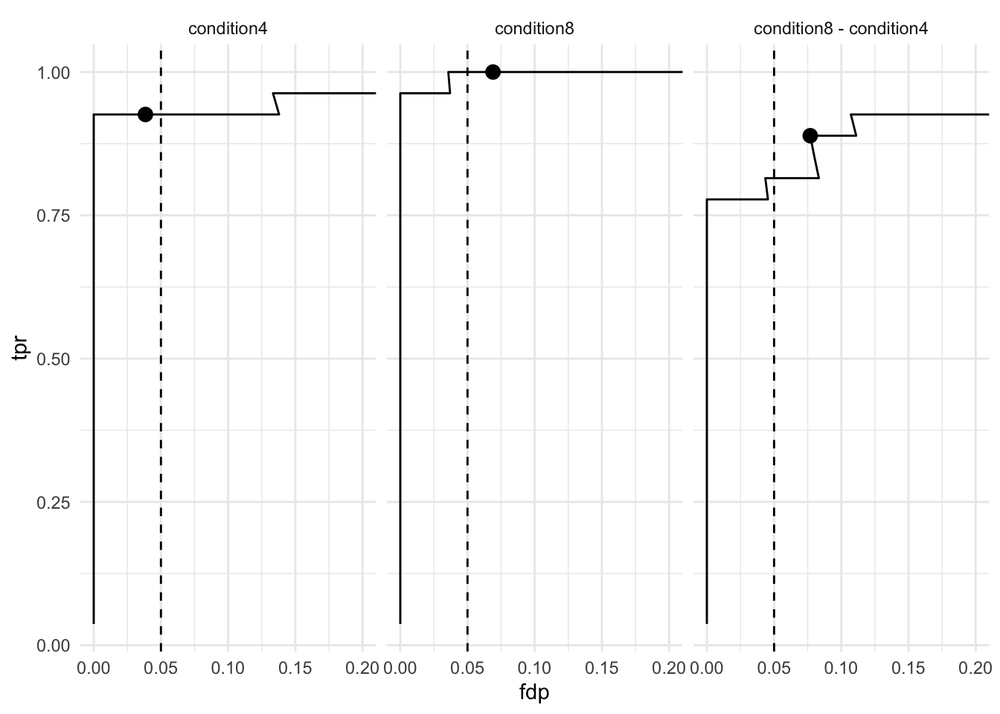
References
Staes, An, Teresa Mendes Maia, Sara Dufour, et al. 2024. “Benefit of in Silico Predicted Spectral Libraries in Data‑independent Acquisition Data Analysis Workflows.” Journal of Proteome Research 23 (6): 2078–89. https://doi.org/10.1021/acs.jproteome.4c00048.
Footnotes
The ion selection for MS2 depends on the data recorded in MS1. Therefore, this approach is referred to as data dependent acquisition (DDA).↩︎
MaxQuant also computes a protein table. However, we found that starting from MaxQuant’s protein table leads to a decrease in performance. We will illustrate in this tutorial how to build the protein table.↩︎
Improving peptide identification is outside the scope of this tutorial↩︎
A
QFeaturesobject can be seen as a special list ofSummarizedExperimentobjects.↩︎see also the R for mass spectrometry book↩︎
We will explain this with more details at the end of the summarisation step↩︎
In fact, this is also true for the previous transformation where the precursors are linked across sets.↩︎
Note that we have the spike-in concentration encoded in two ways.
ratiois encoded as a numerical value and provides the actual ratio for UPS on 10 for yeast.conditionis encoded as a factor, meaning that every concentration is regarded as an independent group. We will use the latter encoding as most common research questions consist of group-wise comparisons. The modelling of concentration as a numeric will be discussed in a dedicated section↩︎Categorical variables are encoded using dummy coding.↩︎
We don’t need to specify the intercept as R automatically adds it during model estimation. you can explicitly add it using
~ 1 + ..., you can also suppress it using~ 0 +. When an intercept is included, one of the groups is defined as the reference group and its corresponding model parameter is absorbed in the intercept. The residuals don’t need to be specified as they are part of the model estimation process.↩︎Note, that we only need to specify the names of the model parameters that are involved in the contrast when using the make contrast function. The hypothesisTest function below will then subset the relevant part from the model output. Also, note that the contrast matrix in this example is trivial. However, we will later show how to asses multiple hypotheses at once and then the contrast matrix consists of multiple columns, with one column for each contrast↩︎
Note, that upon this transformation a value of 1 represents a p-value of 0.1, 2 a p-value of 0.01, 3 a p-value of 0.001, etc.↩︎
The
scales()function aligns the means and the centered standard deviations by column. Since we want to scale by row, we need to transpose (t())) before scaling and transpose back after scaling. Scaling the data will remove changes in feature intensities that are caused by uninteresting changes in ionisation efficiency.↩︎